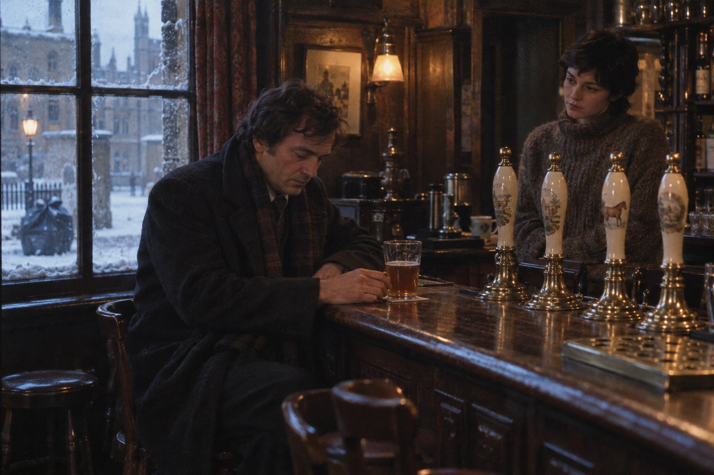

Настоящий эль

Глава первая
Now is the winter of our discontent.
(Вот и зима нашего недовольства.)
— Уильям Шекспир, «Ричард III»
Шекспир вложил эти слова в уста горбуна, который тут же, в следующей строке, объявляет, что зима эта превратилась в славное лето, но английские газеты в начале тысяча девятьсот семьдесят девятого года на следующую строку не смотрели. Им хватало первой. С третьего января бастовали водители грузовиков, бензоколонки одна за другой вывешивали таблички «Бензина нет», у ворот складов и портов стояли пикеты, а премьер-министр, вернувшись с карибского совещания загорелым, сказал в аэропорту журналистам, что не видит никакого нарастающего хаоса. На следующее утро одна лондонская газета пересказала его слова тремя словами, которых он не произносил, — «Кризис? Какой кризис?», — и эти три слова пережили его правительство.
В Оксфорде было холодно так, как не бывало с шестьдесят третьего. Снег выпадал, подтаивал днём, ночью схватывался настом и снова выпадал поверх наста, так что тротуары Сент-Джайлс к середине января состояли из слоёв, как срез геологического учебника, и по этим слоям можно было читать историю недели. Автобусы ходили, когда хотели. Залы читален Бодлианской библиотеки стояли полупустые, потому что студенты ещё не съехались после Рождества, а те, кто съехался, сидели в пабах, где топили сильнее. Пабы в ту зиму вообще были самым тёплым местом в Англии, и об этом следует помнить с самого начала.
Сержанту уголовной полиции Морсу в тот год исполнялось сорок, и он не пил седьмой год. Оба эти числа он носил при себе, как носят в кармане два камня, и оба казались ему в ту зиму тяжелее, чем обычно. В сержантах он просидел дольше всех в участке. За эти годы Джим Стрейндж, с которым он когда-то делил стол, стал инспектором, обзавёлся домом с садиком и начал лысеть с тем спокойным достоинством, с каким делал всё. Бланк заявления на инспекторский экзамен, пожелтевший по краям, лежал у Морса дома в ящике письменного стола, под билетом в Байройт на семьдесят шестой год, и там, казалось, и собирался остаться навсегда.
Так думал Морс до октября, когда в участке появился старший инспектор Макнатт.
Макнатт пришёл с севера, откуда именно, никто точно не знал, а сам он не рассказывал. Это был грузный человек под шестьдесят, с большими тихими руками, седой гривой, которую он не стриг, пока та не начинала лезть в глаза, и с привычкой долго молчать, прежде чем ответить, так что собеседник успевал услышать собственный вопрос ещё раз и пожалеть о нём. По воскресеньям он ходил в церковь, что в участке на Касл-гейт считалось чудачеством, а по вечерам составлял кроссворды, что считалось чудачеством вдвойне, пока кто-то не выяснил, что один из них напечатал лондонский журнал, и с тех пор чудачество стало называться образованностью. Кроссворды Морс решал с детства. Кроссворд Макнатта он решал три вечера и не решил одного слова, и с тех пор относился к новому старшему инспектору с осторожным уважением, какое испытывают к человеку, обыгравшему тебя в твою же игру.
В пятницу, двенадцатого января, в одиннадцать утра, Макнатт вошёл в комнату сержантов, постоял у окна, глядя на серый двор с серыми машинами, у которых в баках было только то, что осталось от декабря, и положил на стол Морса лист бумаги. Это был чистый, недавно отпечатанный бланк заявления на инспекторский экзамен, двойник того, что лежал в ящике, только белый.
— В марте, — сказал Макнатт.
— Сэр, я…
— Я знаю. Мне рассказали. Инспектор Стрейндж напоминает вам раз в год, суперинтендант Хиллиан раз в два года, а вы кладёте бланк в ящик и слушаете Вагнера. Я не буду напоминать. Я просто сказал: в марте. — Он помолчал, и Морс успел дважды услышать в тишине своё недоговорённое «я». — У меня был сержант в Лидсе, вашего возраста. Умнее всех нас. Тоже слушал что-то такое и тоже клал бланки в ящик. В сорок пять он понял, что теперь уже никогда. Он до сих пор сержант. Он до сих пор умнее всех. Он пьёт.
Последние два слова Макнатт произнёс тем же ровным голосом, что и всё остальное, и вышел, не дожидаясь ответа. О том, что Морс не пьёт семь лет, ему, очевидно, тоже рассказали. О том, что было до этих семи лет, ему, очевидно, рассказали тоже. Морс сложил бланк вчетверо, убрал во внутренний карман пиджака и до вечера чувствовал его там, как третий камень.
Письмо лежало на коврике у его двери, когда он вернулся домой. Конверт был дешёвый, из почтового набора, со штемпелем того самого городка на сассекском берегу, и адрес на нём был написан чужим почерком, старательным и неуверенным, каким пишут люди, редко пишущие письма. Морс стоял в пальто в холодной прихожей и смотрел на этот почерк дольше, чем нужно было, чтобы понять, что внутри.
Писал сосед, мистер Сеймур, бывший начальник станции, и писал коротко, как пишут служебные записки о задержке поезда. Мистер Брайт скончался в ночь на шестое января, во сне, сердце. Нашла его женщина, которая приходила убирать. Родных не нашлось. Похороны в четверг, восемнадцатого, в два часа, в приходской церкви; раньше не вышло, потому что такое время. Мистер Брайт оставил для сержанта Морса конверт и просил отдать его в руки, попросил заранее, когда был ещё здоров, в прошлом году. Адрес сержанта нашли в его тетради. С уважением.
В прошлом году. Морс перечитал эти три слова, и они выстроились в ряд с другими словами, которые он помнил дословно: «Приезжайте ещё. Без дела». Весной семьдесят седьмого он собирался поехать, но было дело в Бэнбери. Летом был фестиваль хоров. Осенью была осень. В семьдесят восьмом он послал на Рождество открытку, в которой написал, что приедет весной. Открытка, вероятно, пришла дня за два до той ночи, а может быть, и после, потому что почта в ту зиму ходила как и автобусы. Этого Морс уже никогда не узнает.
Он поставил чайник, дождался, пока тот закипит, и не стал заваривать. В доме не было ничего крепче чая уже семь лет, и в тот вечер Морс впервые подумал об этом не как о своём достижении, а как о недосмотре. Потом он достал из кармана новый бланк, расправил сгибы ладонью и спрятал в ящик, к старому. Теперь их там было два, и билет на них, и все трое были об одном и том же.
Глава вторая
От дыхания Божия происходит лёд, и поверхность вод сжимается.
— Книга Иова, 37:10
Оксфордский канал подходит к городу с севера, от Ковентри и Бэнбери, протискивается задворками Джерико между лодочными сараями, старой литейной и задними стенами домов викторианских рабочих и там, у церкви святого Варнавы с её итальянской колокольней, тихо кончается, не дойдя нескольких сотен ярдов до вокзала, как кончается жизнь человека, который прожил её полезно и не стал никому мешать на прощание. Вдоль канала идёт бечевник, то есть тропа, по которой когда-то лошади тянули баржи с углём, а теперь ходят собачники, влюблённые и люди, которым из паба домой так ближе.
В понедельник, пятнадцатого января, в восемь утра, женщина, жившая на узкой канальной лодке у Уолтон-уэлл, вышла с тазом за снегом, потому что труба у неё замёрзла ещё на Рождество, и в сугробе между бечевником и забором литейной, осевшем за воскресную оттепель, увидела рукав твидового пальто и в рукаве руку в кожаной перчатке. Таз она уронила, и он скатился на лёд канала и проехал по нему до середины, и полицейские потом целый день видели его там, красный, пластмассовый, неуместный, как всякая яркая вещь на месте смерти.
Инспектор Стрейндж и сержант Морс пришли пешком, потому что бензин в участке выдавали теперь по ведомости, а с Касл-гейт до Джерико идти двадцать минут, если не падать. Морс упал дважды. Доктор де Брин приехал на своём старом «Ровере», в баке которого, по его словам, был ещё бензин правительства Хита, и не упал ни разу, что относил на счёт образа жизни.
Мёртвый лежал на боку, поджав ноги, как ложатся люди, которым холодно в постели. Это был плотный человек лет пятидесяти с лишним, в твидовом пальто, коричневых ботинках и вязаном шарфе цветов какого-то колледжа, с красным бугристым лицом, ставшим теперь серым с прожилками, и с носом, который даже теперь сохранял выражение человека, привыкшего судить. В кармане пальто нашли бумажник с деньгами, членский билет Кампании за настоящий эль на имя Хью Кэрроу и чёрную записную книжку, исписанную столбиками: название паба, название пива, цифра от нуля до пяти и одно слово. Слова были такие: «честно», «так себе», «устало», «помои».
Кампания за настоящий эль, которую в пабах звали просто Камрой, как зовут соседскую собаку, возникла в начале семидесятых, когда крупные пивоварни стали вытеснять из пабов бочковый эль, живой, доброжённый прямо в погребе и капризный, как всё живое, и заменять его кеговым пивом, профильтрованным, газированным и неизменным от Корнуолла до Нортумберленда. С семьдесят четвёртого года Кампания выпускала путеводитель по пабам, где держат хороший эль, и пабы в него не покупались и не просились: местные члены ходили, пили, ставили оценки и голосовали на собрании отделения. Хью Кэрроу был председателем оксфордского отделения и пять лет вел по субботам колонку в «Оксфорд мэйл». Разглядывая его записную книжку в перчатках, Морс пересчитал слова «помои»: их оказалось вчетверо больше, чем слов «честно».
Де Брин осматривал тело долго и с недовольством человека, которого заставили отвечать на вопрос, заданный на чужом языке.
— Удар вот здесь, над левым ухом, — сказал он наконец. — Чем-то твёрдым и узким, не камнем. Череп цел, от этого он бы не умер. Он упал, полежал без сознания, а дальше за дело взялся наш нынешний январь. Выпито было немало, это я вам скажу точнее после вскрытия, но и сейчас видно, что человек пил не в первый раз.
— Когда? — спросил Стрейндж.
Де Брин снял очки и посмотрел на него так, как смотрят на ребёнка, спросившего, почему небо голубое.
— Инспектор, тело несколько дней пролежало в сугробе при минус пяти ночью и нуле днём. Мороз останавливает все часы, по которым я обычно считаю. Он мог умереть в пятницу. Мог в четверг. Мог, если угодно, во вторник, хотя во вторник вечером по этому бечевнику ещё ходили и вряд ли бы его не заметили. Скажите мне, когда он в последний раз ел, и я скажу вам, когда он умер. Больше вам никто не скажет, а я и этого не скажу точно.
Заявление о пропаже Хью Кэрроу, как выяснилось через час, приняли на Сент-Олдейтс накануне, в воскресенье днём, от его жены. А ещё через час дежурный констебль принёс в участок субботний номер «Оксфорд мэйл», раскрытый на странице с колонкой «Пинта с Кэрроу», и Стрейндж прочёл её вслух, стоя посреди комнаты, тем голосом, каким читают протокол:
В пятницу вечером, когда половина нашей несчастной страны стояла в пикетах, а другая половина в очередях за бензином, ваш покорный слуга искал утешения в «Бочаре» на Уолтон-стрит и нашёл его. Фрэнк Эллери снова доказал, что умеет обращаться с бочкой: его «Старый бочар» из новой бочки был в лучшей форме за всю эту зиму, прозрачный, живой, с честной горечью и длинным сухим хвостом. Если вы можете добраться до Джерико без бензина, ступайте туда, пока бочка не кончилась.
— Ну вот, — сказал Стрейндж, складывая газету. — В пятницу вечером он был жив и пил в ста ярдах от того места, где его нашли. Так что де Брин может не волноваться насчёт вторника.
Морс взял у него газету и перечитал колонку ещё раз, про себя. Колонка была написана тем особым пивным языком, который в семидесятые годы выработали себе знатоки по образцу знатоков вина и с той же целью: чтобы читатель не мог проверить. В ней не было ничего странного. Морс, впрочем, в то утро и не искал странного: он помнил только, что в четверг, в два часа, в приходской церкви городка на сассекском берегу будут хоронить человека, которому он два года не мог собраться нанести визит, и что бензина до четверга в Англии, по всей видимости, не появится.
Глава третья
Добрую жену кто найдёт? цена её выше жемчугов.
— Книга притчей Соломоновых, 31:10
Кэрроу жили на Полстед-роуд, в той части Северного Оксфорда, где викторианские дома профессоров уже становятся поменьше и поскромнее, а канал с его бечевником лежит в десяти минутах ходьбы, если идти задворками, и в пятнадцати, если идти как положено. Дом был узкий, в три этажа, с выметенной дорожкой к крыльцу и песком, посыпанным на ступеньки так ровно, будто его рассыпали через сито.
Миссис Сильвия Кэрроу была маленькой седой женщиной лет пятидесяти пяти, в сером твидовом костюме и с тем ровным спокойствием, которое полицейские привыкли видеть у вдов в первый день и которое не означает ничего, кроме того, что первый день ещё не кончился. Она выслушала Стрейнджа стоя в прихожей, сказала «Да. Я понимаю» и провела их в кабинет мужа, потому что только там было тепло: мистер Кэрроу, объяснила она, не терпел холода и топил кабинет при любых ценах на уголь.
Кабинет был комнатой человека, который двадцать лет собирал свидетельства собственной значительности. На полках стояли пивные кружки с гербами пивоварен, давно поглощённых более крупными, на стенах висели дипломы и фотографии с пивных фестивалей, и на всех фотографиях Хью Кэрроу держал кружку на свет, прищурив один глаз, с выражением судьи, который уже знает приговор, но из вежливости дослушивает прения. На письменном столе стояла пишущая машинка «Оливетти» под чехлом, и рядом с ней папка с надписью «Колонки», толстая, как ветхий завет.
— Кто их печатал? — спросил Морс.
— Я, — сказала миссис Кэрроу. — Двадцать лет. Хью диктовал, ходя по комнате, а я печатала. Он говорил, что у него хороший вкус и плохие пальцы, а у меня наоборот. — Она не улыбнулась. — Я не пью, сержант. Совсем. Хью считал это чем-то вроде дальтонизма, но от него не лечат.
Остальное она рассказала точно, по порядку, как диктуют. В среду вечером у мужа было собрание комитета отделения, в задней комнате паба на Сент-Джайлс; вернулся он поздно, как всегда по средам, пешком, бечевником, потому что так ближе. В четверг весь день сидел дома и строил планы: в пятницу он собирался в «Бочар», где Эллери поставил новую бочку, и решил, что напишет о ней в субботнюю колонку и сам забросит конверт в редакцию по дороге домой: ночная смена принимала его тексты до полуночи. А её самую в пятницу в три часа ждал автобус в Эбингдон, к сестре, у которой были именины. Вернулась она в субботу вечером. Мужа дома не было. Это с ним случалось, он мог уехать на пивной фестиваль, не предупредив. В воскресенье днём она пошла в полицию.
— Кто напечатал субботнюю колонку, если вас не было? — спросил Стрейндж.
— Он сам. Он умел, двумя пальцами, когда было нужно. — Миссис Кэрроу посмотрела на чехол машинки так, как смотрят на лошадь, на которой проехал чужой. — Раз или два в год.
Потом она рассказала про путеводитель, и Морс, слушая, впервые понял, что человек с кружкой на фотографиях был в Оксфорде чем-то вроде законодателя. Отделение голосовало, какие пабы предложить в следующее издание путеводителя, но голосовало так, как скажет Хью. Паб, попавший в путеводитель, жил: туда ехали из Лондона, там стояли в субботу у стойки в три ряда. Паб, выпавший из путеводителя, чах или доставался пивоварне, которая выкидывала бочки и ставила хромированные краны. Кому-то Хью спасал жизнь, кому-то нет. Нет, его не любили. Его боялись, а это Хью устраивало больше.
Из папки на столе она, не спрашивая, достала лист, отпечатанный в декабре: проект списка на весеннее собрание отделения, два столбца, «оставить» и «исключить». Во втором столбце третьей строкой стоял «Бочар», Уолтон-стрит, и рядом рукой Кэрроу, крупно: «Устал. Если Ф. Э. не докажет».
— А в пятницу он пишет, что Эллери доказал, — сказал Стрейндж.
— Да, — сказала миссис Кэрроу. — Хью любил, когда доказывают. Это давало ему право быть справедливым.
Имена она назвала сама, даже не дожидаясь вопроса о врагах, как читают повестку дня. Фрэнк Эллери из «Бочара». Мистер Невилл Торн из пивоварни «Брэдли и сыновья», который приходил сюда в декабре и долго говорил с Хью за закрытой дверью, а когда ушёл, Хью был в хорошем настроении, а это с ним бывало нечасто. И Питер Ласк, молодой человек, который три года ходил за Хью по пабам, как оруженосец, и которому теперь, вероятно, достанется колонка.
Уже в прихожей она спросила, не хотят ли они хереса на дорогу, херес держал Хью, для гостей, а ей он ни к чему. Стрейндж отказался за обоих. На улице он сказал, поднимая воротник:
— Держится.
— Двадцать лет печатала под диктовку, — сказал Морс. — Научилась.
Он сам не знал, чему именно она научилась, и рассказчик не станет подсказывать ему в тот день, потому что подсказки сержанту Морсу в этой истории понадобятся не скоро, а когда понадобятся, он будет не в состоянии их услышать.
Глава четвёртая
Malt does more than Milton can / To justify God's ways to man.
(Солод лучше Милтона умеет оправдать пред людьми Бога.)
— А. Э. Хаусман, «Шропширский парень», LXII
«Бочар» стоял на углу Уолтон-стрит и узкого переулка, сбегавшего к каналу, и был тем, чем были все пабы Джерико со времён королевы Виктории: одной низкой комнатой с тёмным потолком, другой комнатой, посветлее, для тех, кто приходил с женщинами, стойкой из тёмного дерева, отполированного локтями четырёх поколений литейщиков и печатников, и со всех сторон пропахшей пивом, табаком и мокрыми пальто. Над стойкой торчали четыре длинные ручки пивных насосов из фаянса и меди, и именно они, а не вывеска, сообщали знающему человеку, куда он попал: бочковый эль выкачивают из погреба рукой, а кеговое пиво выталкивает из баллона углекислый газ, и для людей вроде Хью Кэрроу эта разница была разницей между цивилизацией и варварством.
Фрэнк Эллери был человеком лет шестидесяти, широким и медленным, как бочка, по которой назван его паб, с руками в синеватых прожилках от сорока зим в холодном погребе. О смерти Кэрроу он уже знал, как знал весь Джерико, и не стал притворяться огорчённым.
— Я вам скажу как есть, сержант, — сказал он, вытирая стакан, который и так был сухим. — Он собирался меня выкинуть. Все знали. В сентябре у меня две бочки подряд ушли в уксус, с кем не бывает, и он как раз зашёл. С тех пор ходил и нюхал. А если меня выкидывают из книжки, то весной я продаю паб «Брэдли», они мне давно предлагают, и через год тут будет пластик, музыкальный автомат и пиво из баллона. Так что плакать я не стану. Но я его не трогал.
— Он написал, что был у вас в пятницу.
— Знаю. Мне показали. — Эллери поставил стакан на полку. — Я его не видел. В пятницу у меня с семи часов лопнула труба в погребе, я полвечера стоял внизу по щиколотку в воде. За стойкой была Лоррейн. Может, он заходил. Раз написал, значит, заходил, он же не врал про пиво. Про людей врал, а про пиво никогда.
Лоррейн была девушкой лет двадцати трёх, с коротко стриженными чёрными волосами, в толстом свитере с чужого плеча и с глазами, которые видели всё, что происходило по ту сторону стойки, и ничего из этого не выдавали. На вопрос Морса она посмотрела сначала на хозяина, потом на стойку, потом сказала, что в пятницу был такой народ из-за холода, что она не помнит, кто был, а кого не было. Морс слышал в своей жизни столько неправды, что отличал её от правды по интонации, как настройщик отличает фальшивую ноту, и эта неправда показалась ему странной: так врут не для себя, а для кого-то, кто стоит рядом. Рядом стоял Эллери.
Книга погреба висела на гвозде у лестницы вниз, и Эллери снял её без возражений. Это была засаленная тетрадь с разграфлёнными от руки столбцами, и Морс, листая её, узнал о бочковом эле больше, чем за всю предыдущую жизнь. Бочку привозят с пивоварни, ставят на подставку и дают постоять, потом вбивают в верхнее отверстие деревянный колышек, чтобы вышел лишний газ, а на следующий день вбивают кран и начинают торговать. С этой минуты эль живёт дней пять. Потом он выдыхается, тускнеет, начинает киснуть, и честный хозяин выливает остатки в сток, а нечестный мешает со свежим. В книге стояло чётко, рукой Эллери: «Старый бочар», бочка номер такой-то, привезена во вторник третьего, до забастовки, колышек в пятницу пятого, на кране с субботы шестого. Следующей записи не было.
— Она ещё на кране? — спросил Морс.
— Дотянул. В такой холод в погребе держится подольше, а торговля сами видите какая: денег нет ни у кого, новую бочку мне не везут, грузовики стоят. Сегодня солью. — Эллери посмотрел на Морса с внезапным интересом. — Хотите знать, прав ли он был? Хорошее у меня пиво или нет? Так попробуйте.
Следует сказать прямо, что у сержанта Морса была причина, и причина служебная. Если бочка была плоха, то колонка Кэрроу была неправдой или ценой чего-то. Если хороша, то у Эллери было на один мотив меньше. Узнать это можно было только одним способом, и де Брин со своими пробирками здесь помочь не мог. Рассказчик не станет утверждать, что причина была единственной. Он утверждает только, что она была.
Эллери налил полпинты, медленно, в два качка длинной фаянсовой ручки, и поставил стакан на стойку. Эль был тёмно-янтарный и не совсем прозрачный, и пена на нём осела сразу, как оседает на речной воде.
Морс посмотрел на стакан, потом в окно, где по Уолтон-стрит шла женщина с коляской, обходя сугроб, потом снова на стакан. Семь лет он проходил мимо таких стаканов, как проходят мимо дома, где когда-то жили, не поднимая глаз на окна. Он взял стакан, поднёс к лицу, и нос сказал ему всё раньше языка, но он всё равно сделал глоток.
Эль был плоским. На языке легла вялая, усталая сладость, за ней пришла горечь, которая давно устала быть горечью, а в самом конце, у корня языка, стояла едва заметная кислинка, та, что через день-два стала бы уксусом. Морс поставил стакан. Он чувствовал, как пиво идёт вниз и как тело, ничего за семь лет не забывшее, встречает его, как старого знакомого, которого давно перестали звать в гости, а он всё равно пришёл и сел на своё старое место.
— Устало, — сказал он словом из записной книжки Кэрроу.
— Десятый день, — сказал Эллери без обиды. — А в субботу было пиво, какого у меня с лета не было. Спросите кого хотите.
Морс допил полпинты, потому что оставлять было уже бессмысленно, заплатил, хотя Эллери не хотел брать, и вышел в холод. Вкус будет стоять у него во рту до вечера, а в памяти дольше, чем он сейчас может предположить, и рассказчик просит читателя запомнить его тоже: плоский, усталый, с кислинкой у корня языка. На пороге Морс обернулся. Лоррейн смотрела на него из-за стойки, и на лице её было то самое, что она не сказала.
Глава пятая
Лучше ходить в дом плача об умершем, нежели ходить в дом пира; ибо таков конец всякого человека, и живый приложит это к своему сердцу.
— Книга Екклесиаста, 7:2
В четверг, восемнадцатого января, Морс выехал из Оксфорда поездом в восемь сорок, имея в запасе, по расписанию Британских железных дорог, два часа с четвертью на дорогу до сассекского берега и ещё час на то, чтобы найти церковь, постоять у ограды и придумать, что сказать человеку, которому сказать уже ничего нельзя. Расписание Британских железных дорог было документом почтенным и составлялось людьми, верившими в порядок, но в ту зиму его читали так, как читают старые путеводители по городам, разрушенным войной: с уважением к тому, что там было когда-то. Половина Англии, у которой в баке не осталось бензина, пересела в поезда, и поезда приняли её так, как принимает нежданных гостей небогатый дом, без радости, но и без возражений, просто потеснившись.
Стрейндж отпустил его без вопросов, потому что знал, куда он едет, и даже предложил подвезти до вокзала на служебной машине, чего делать не полагалось, и Морс отказался, потому что этого не полагалось. Макнатт, проходя через комнату сержантов, остановился у его стола, посмотрел на чёрный галстук, которого Морс не надевал с похорон матери, и ничего не сказал, а только положил ему на плечо свою большую тихую руку и на секунду задержал её там, как задерживают руку на перилах, проверяя, крепко ли держатся.
За Дидкотом поезд встал. Стоял он час и десять минут посреди белого поля, где из снега торчали только верхушки изгороди, похожие на строчку, которую кто-то начал писать и бросил, и проводник, проходя по вагону, объяснял каждому, кто спрашивал, что замёрзли стрелки, а каждому, кто не спрашивал, объяснял то же самое на всякий случай. Морс не спрашивал. Он сидел у окна, в пальто, потому что в вагоне не топили, и смотрел на поле, и думал о том, что в двух часах езды отсюда стоит в церкви гроб, и к нему не торопится никто, кроме человека, который полтора года не мог собраться приехать к живому, а теперь сидит в холодном вагоне и злится на стрелки так, как будто стрелки в чём-то виноваты.
В Паддингтоне он бежал к метро, на Виктории бежал к поезду, и успел на поезд, который отходил на сорок минут позже нужного, потому что нужный ушёл без него, впервые за всю зиму вовремя. В городок на сассекском берегу он приехал в двадцать минут четвёртого. От станции до церкви было десять минут ходу, и он прошёл их за шесть, по наледи, в городских ботинках, ни разу не упав, хотя в другой день упал бы обязательно, потому что ноги в этом смысле устроены так же, как совесть: держат человека, пока он не начал на них рассчитывать.
Служба кончилась. Церковь была пуста и уже выстужена, и только в боковом приделе пожилая женщина собирала с подставки листки с порядком службы, которых было напечатано, как отметил Морс, штук сорок, а взято три. За церковью, на кладбище, под низким серым небом, с которого сыпалась не то крупа, не то соль, у свежей ямы стояли трое: высокий старик в чёрном пальто с бархатным воротником, полная женщина в платке и человек в морском бушлате, очень прямой, с орденской планкой на лацкане, которую никто, кроме него и, вероятно, покойного, здесь прочесть бы не сумел. Чуть в стороне, опершись на лопату, ждал могильщик, и было видно, что ждёт он не первый час и что мёрзлая земля, которую он долбил с утра, ему ещё долго не простит этого гроба. Викарий уже ушёл.
Морс встал у ограды и снял шляпу. Высокий старик обернулся, посмотрел на него внимательно, как смотрел, вероятно, тридцать лет на опаздывающие поезда, и подошёл.
— Сержант Морс? Сеймур. Мы с вами переписывались. — Он не сказал «вы опоздали»; это сказали за него пустые скамьи в церкви и листки на подставке. — Поезда, я понимаю. Такое время. Нас было пятеро с викарием и миссис Тидди, которая к нему ходила. Из полиции прислали венок. Из Оксфорда.
Венок лежал на холмике выброшенной земли, казённый, аккуратный, с лентой, на которой золотом было отпечатано название полиции графства и не было ни одного имени. Морс смотрел на этот венок и думал, что, вероятно, его заказывали по тому же бланку, по которому заказывали копирку для пишущих машинок и мыло для туалетов, и что никто в этом не виноват, и что от этого ничуть не легче.
Они постояли у ямы ещё немного, вчетвером, пока могильщик, получив кивок мистера Сеймура, не начал бросать вниз землю, которая падала на крышку гроба не с тем мягким звуком, каким её описывают в романах, а с сухим стуком, как падают камни, потому что это и были камни, смёрзшиеся комья. Человек в бушлате стоял навытяжку до последней лопаты. Полная женщина плакала, тихо и деловито, и между делом сказала Морсу, что мистер Брайт был очень аккуратный жилец и всегда платил ей за неделю вперёд, а на Рождество подарил ей коробку печенья и книгу о птицах, и что книгу она, наверное, не прочтёт, но будет хранить. Морс сказал, что это правильно.
Конверт мистер Сеймур отдал ему у ворот кладбища, как и обещал, в руки. Это был плотный служебный конверт, коричневый, из тех, в каких когда-то ходили по участку на Касл-гейт приказы и характеристики, и на нём рукой Брайта, твёрдой, с наклоном, которого не изменили ни возраст, ни болезнь, было написано: «Сержанту Э. Морсу. Лично».
Открыл его Морс только на вокзале, на скамейке пустой платформы, под табличкой с названием станции, по которой ветер с моря гонял ту же крупу. Внутри лежали два письма, его собственные, и он узнал их раньше, чем развернул, по бумаге: одно, короткое, в две строки, было написано зимой семьдесят четвёртого года, когда он сообщал бывшему начальнику, что жив, работает и благодарит его за всё, не уточняя, за что именно; другое, на целую страницу, было отправлено летом семьдесят шестого, после дела о Хэддонской мельнице, и кончалось словами «Вы были правы, сэр, и он был прав». Оба письма были сложены по старым сгибам, но сгибы эти были потёрты так, как протираются только бумаги, которые много раз доставали из конверта и снова клали обратно.
Третьей в конверте лежала карточка, простая, белая, без рамки, какие кладут в букеты. На ней тем же твёрдым почерком было написано одно слово, точка и инициалы:
«Почти. Р. Б.»
Морс сидел на скамейке, пока не подошёл поезд, и успел за это время прочесть слово столько раз, сколько оно позволяло, и понять его, кажется, всеми способами, какими его можно было понять, и ни один не показался ему окончательным. Почти — что? Почти простил? Почти стал тем, кем мог бы стать? Почти приехал? Брайт всю жизнь писал рапорты, в которых не было ни одного лишнего слова, и это последнее слово тоже, наверное, не было лишним, но человек, которому оно предназначалось, видимо, должен был сам найти, к чему его приставить, как находят недостающее слово в кроссворде по буквам, которые уже стоят. Морс не находил. Буквы, которые уже стояли, были слишком разные.
Обратный поезд до Виктории был полон, и Морс стоял в тамбуре у окна, за которым ничего не было видно, кроме собственного лица и темноты за ним. Потом он прошёл в вагон-буфет. Буфетчик, молодой человек с усталыми глазами и в белой куртке, которую давно не стирали, назвал ему, что есть: чай, кофе, бутерброды с сыром, бутерброды с сыром и помидором, и в холодильнике под стойкой пиво в банках и маленькие бутылочки виски, те самые, какие дают в самолётах, по сорок миллилитров, на один глоток для нервного пассажира.
Рассказчик обещал читателю ещё в первой главе, что не станет лгать о причинах, и сдержит слово. Во вторник, в «Бочаре», у сержанта Морса была причина служебная, и рассказчик её предъявил. В четверг вечером, в вагоне-буфете поезда, который шёл с сассекского берега в Лондон с опозданием на сорок минут, у сержанта Морса служебной причины не было, и никакой другой, которую можно было бы записать в рапорт, тоже. Он попросил банку горького и одну бутылочку виски. Потом попросил ещё одну. Буфетчик ставил их на стойку без всякого выражения, как ставил, вероятно, каждый вечер, потому что в вагонах-буфетах ночных поездов люди с чёрными галстуками бывают чаще, чем принято думать.
Пиво из банки оказалось именно тем, против чего двадцать лет воевал Хью Кэрроу: холодным, шипучим, ровным и ни о чём, и Морс отметил это с какой-то посторонней, профессиональной частью ума, которая продолжала работать, как продолжают идти часы на руке у человека, упавшего в воду. Виски было лучше. Виски было ровно тем, чем было семь лет назад, и тело, как и во вторник, встретило его без удивления. От Клэпхема до Виктории Морс успел подумать, что выпьет ещё на Паддингтоне, в привокзальном пабе, до поезда на Оксфорд, и подумал это спокойно, как думают о расписании.
В Паддингтоне он так и сделал. В оксфордском поезде он заснул и проснулся только в Дидкоте, где поезд снова стоял, на этот раз всего двадцать минут, и где-то между Дидкотом и Оксфордом обнаружил, что карточку Брайта держит в руке, а коричневый конверт с письмами потерял. Он вернулся в вагон, из которого вышел в Паддингтоне, прошёл его дважды, заглянул под каждую скамейку, и конверта не нашёл. Конверт остался то ли в буфете, то ли в пабе, то ли на скамейке у Виктории, и два письма Морса, которые Брайт столько раз доставал и клал обратно, ехали теперь куда-то сами по себе, по всей Англии, вместе с потерянными перчатками и зонтами, и найти их было уже нельзя.
Карточку Морс положил во внутренний карман, к бланку экзамена, который зачем-то носил при себе всю неделю. Дома он лёг, не раздеваясь, и последнее, о чём он подумал перед сном, было не слово «почти» и не Брайт, а то, что завтра, в пятницу, он должен ещё раз поговорить с Фрэнком Эллери о лопнувшей трубе, и что «Бочар» открывается в одиннадцать.
Глава шестая
Suspicion always haunts the guilty mind; The thief doth fear each bush an officer.
(Подозрение всегда преследует виновного; вору в каждом кусте мерещится стражник.)
— Уильям Шекспир, «Генрих VI», часть третья
Утро пятницы сержант Морс встретил так, как встречал его семь лет назад и как надеялся не встречать больше никогда: в пиджаке поверх одеяла, с вкусом меди во рту и с тем тупым, деловитым отвращением к себе, которое на самом деле не чувство, а распорядок дня. Он побрился, порезавшись дважды, выпил чай, которого не заварил накануне, и нашёл в кармане карточку «Почти», а рядом с ней пустое место, где должен был лежать конверт. Пустое место было тяжелее карточки.
Работа, к счастью или к несчастью, ждала его и была простой, как карандашная линия. В пятницу, двенадцатого, Хью Кэрроу пришёл в «Бочар». Десять дней спустя Морс сам пил из той же бочки и знал, что там наливали, и допускал, что в пятницу там наливали почти то же самое, только на четыре дня моложе. Кэрроу попробовал, сказал то, что думал, а думал он обычно вслух и на весь зал, и ушёл к каналу. Эллери, стоявший, по его собственным словам, полвечера в погребе один, вышел через люк, через который спускают бочки с улицы, в переулок, сбегавший к бечевнику, догнал его у литейной, стукнул чем-нибудь из тех твёрдых и узких предметов, которых в любом погребе десятки, и вернулся тем же путём к своей трубе, а Лоррейн, которая видела всё или почти всё, теперь врала ради него. Колонку, отнесённую в редакцию, Морс в этой картине пока не умещал и отложил её в сторону, как откладывают при решении кроссворда ключ, который не получается, в уверенности, что он сам сойдётся, когда всё остальное встанет на место.
Стрейндж выслушал эту версию в своём новом кабинете, где на столе, рядом с фотографией Джоан, стояла недавно склеенная модель подводной лодки, серая, с крошечным флажком на рубке, о которой Стрейндж никогда ничего не объяснял, а Морс никогда не спрашивал, потому что между мужчинами, прослужившими вместе долго, есть вопросы, которые пропускают из уважения, и вопросы, которые пропускают из лени, и издали их не отличить. Стрейндж слушал, кивал, а в конце сказал то, что любой инспектор сказал бы любому сержанту:
— А зачем тогда колонка? Если Кэрроу назвал его пиво помоями при всём зале, откуда в субботней газете «лучшая форма за зиму»? Эллери что, сам себе написал рецензию и отнёс в редакцию?
— Не знаю, — сказал Морс. — Может быть, Кэрроу написал её заранее. Может быть, ему заплатили, а потом он передумал.
Стрейндж посмотрел на него чуть дольше, чем смотрят на человека, предложившего слабую версию, и чуть меньше, чем смотрят на человека, от которого пахнет вчерашним, и сказал, что не возражает. Он вообще редко возражал, и в этом была его сила, а иногда, как окажется позже, и его вина.
В «Бочар» Морс пришёл в одиннадцать, к открытию, и попросил показать погреб. Эллери повёл его вниз по крутой каменной лестнице, головой задевая проводку, и Морс увидел длинный низкий свод, влажный и холодный, как церковная крипта, с бочками на каменных подставках вместо гробов. В дальнем торце к потолку вели ступеньки двойного люка, и створки его изнутри были обтянуты толстым, серым, наслоившимся льдом, как стенки старого холодильника. Вдоль стены шла труба, и на ней блестел новенький медный участок с свежим оловом на стыках, аккуратным, как шов хорошего хирурга.
— Кто паял? — спросил Морс.
— Я.
— Вы не паяли, мистер Эллери. У вас не такие руки. И люк вы в пятницу не открывали, потому что его не открывали с Рождества. Этот лёд так за неделю не нарастает.
Эллери помолчал, глядя не на Морса, а на свои руки, как будто надеялся, что они всё-таки такие, и потом рассказал. Трубу паял Тед Боуйер, слесарь из городского жилищного отдела, который жил через два дома. Пришёл в половине восьмого со своим инструментом и своей паяльной лампой, и до половины одиннадцатого они вдвоём стояли тут, в воде, и вычерпывали её вёдрами и таскали вёдра наверх, через кухню, потому что люк даже ломом не взялся. А не назвал он его сразу потому, что Тед вторую неделю сидел без работы и без денег, в совете говорили, что скоро начнётся и у них, а если в совете узнают, что он подрабатывает за наличные, его уволят, а у Теда пятеро детей.
— Я думал, что мне и так поверят, — сказал Эллери. — Думал, если человек сорок лет держит паб и ни разу не разбавил пива, то ему и так поверят. Глупо, да?
Тед Боуйер, низкорослый человек с ожогами на пальцах и очень синими глазами, подтвердил всё, стоя в дверях своего дома и не приглашая войти, потому что за его спиной в коридоре стояли, по счёту Морса, все пятеро и слушали. Да, с половины восьмого до половины одиннадцатого. Нет, Фрэнк никуда не выходил, разве что с ведром на кухню, и то оба ходили по очереди. Люк? Люк они пробовали отбить вдвоём, и Тед потерял на нём ноготь, вот. Кто был наверху, он не знает, он наверху не был и пива в тот вечер не пил, только чай, из термоса, свой. И если сержант не скажет в совете, то Тед будет ему благодарен до конца жизни.
Морс не сказал в совете. Он записал показания и оставил их в деле так, чтобы их никто не читал, что в полиции делается на удивление просто, и пошёл обратно в «Бочар», чтобы сказать Эллери, что к нему больше нет вопросов. Сказать это можно было и по телефону. Рассказчик отмечает это без насмешки.
В тот день в «Бочаре» стояла новая бочка, последняя, как сказал Эллери, которую ему привезли с пивоварни на телеге, запряжённой лошадью, потому что лошади не бастуют, и на этот раз Эллери ничего не предлагал, а Морс попросил сам и заплатил, и не полпинты, а пинту. Эль был другим: прозрачным, как стекло церковного окна на солнце, с плотной мелкой пеной, которая держалась до дна и оставляла на стекле кольца по числу глотков, с чистой горечью и длинным сухим хвостом, о котором Морс случайно подумал какими-то чужими, газетными словами, и слова эти тотчас потонули в пиве, не оставив следа, как тонет в снегу монета.
Лоррейн протирала стойку в другом конце и на Морса не смотрела, и не смотрела так старательно, что это было видно с улицы. Теперь, когда выгораживать хозяина было уже не нужно, Морс мог бы спросить её ещё раз, и она, возможно, ответила бы иначе. Он не спросил. Он допил пинту, и думал при этом не о Лоррейн и не о пятнице, а о мистере Невилле Торне из «Брэдли и сыновей», после визита которого Хью Кэрроу был в хорошем настроении, а это с ним бывало нечасто. Потом заказал вторую, потому что о Торне думалось хорошо.
Из всех ошибок, сделанных сержантом Морсом в этом деле, а их будет достаточно, эта, первая, была самой тихой. Он не спросил лишний раз девушку за стойкой. Он спросит её потом, когда спрашивать будет уже нельзя.
Глава седьмая
Корень всех зол есть сребролюбие.
— Первое послание к Тимофею, 6:10
Пивоварня «Брэдли и сыновья» давно уже не имела никакого отношения ни к Брэдли, ни к его сыновьям, последний из которых умер в тридцать девятом году, оставив наследникам портрет маслом и долги, и после двух слияний и одного поглощения принадлежала теперь лондонской компании, в годовом отчёте которой слово «пиво» встречалось реже, чем слово «активы». Портрет маслом висел в приёмной конторы на Осни, над диваном из зелёного винила, и старый Брэдли смотрел с него на посетителей с выражением человека, которого заставили висеть в чужом доме.
В пятницу вечером, пока Морс допивал свою вторую пинту в «Бочаре», Стрейндж получил из банка на Корнмаркет то, что просил: двадцатого декабря Хью Кэрроу внёс на свой счёт триста фунтов наличными, а на три года назад таких взносов было ещё пять, все в декабре или в июне, все круглые и все за несколько дней до того, как отделение Кампании собиралось голосовать. Для служащего железнодорожной конторы, которым, как выяснилось, Хью Кэрроу был по основному роду занятий, это были деньги солидные, и за колонки в «Оксфорд мэйл», как сразу сообщили в редакции с лёгкой обидой, платили не так.
Мистер Невилл Торн принял их в субботу утром, хотя по субботам не работал, и принял так, чтобы это было заметно. Это был человек лет сорока пяти, очень чистый, в сером костюме и с галстуком какого-то клуба, с ласковым лондонским выговором, тщательно очищенным от лондонских улиц, и с манерой не спорить, а соглашаться, пока собеседник сам не окажется на его стороне. Должность его называлась «управляющий сетью», и сетью были пабы: четыреста с лишним между Суиндоном и Бакингемом, и каждый год их становилось больше.
Нет, он не станет отрицать, что бывал у Кэрроу. Нет, он не станет отрицать, что платил ему, и слово «платил» Торн произнёс без тени смущения, как произносят слово «аренда». Мистер Кэрроу был для пивоварни консультантом. Он знал пабы графства как никто, и пивоварня платила за его знания, как платят оценщику недвижимости. Торн даже достал из ящика и положил на стол копию договора, подписанного в семьдесят пятом году, с печатью и подписью, и подвинул его Стрейнджу так, как игрок подвигает фишку, которую приберегал до нужного хода.
Морс договор читать не стал. Он спросил, какие пабы пивоварня купила в семьдесят шестом, семьдесят седьмом и семьдесят восьмом году в Оксфорде и округе, и Торн, после паузы ровно такой длины, какая нужна, чтобы отказ не выглядел отказом, продиктовал секретарше список. В списке было восемь названий. Вечером Морс сверил его с папкой Кэрроу, и все восемь стояли в столбцах «исключить» прошлых лет, каждый за полгода до продажи. Хью Кэрроу сообщал пивоварне, какой паб вылетит из путеводителя, за неделю до того, как об этом узнавали члены отделения, и за полгода до того, как об этом узнавал сам хозяин, и пивоварня приходила к хозяину с предложением именно тогда, когда он больше всего боялся и меньше всего торговался. Всё это было, как сказал бы Торн, не преступлением, а рынком, и в юридическом смысле он, по всей видимости, был прав.
«Бочар» тоже был в планах. Торн и этого не скрыл. В декабре Кэрроу сказал ему, что весной «Бочар» вылетит, и взял свои триста фунтов, а потом, как деликатно выразился Торн, начал пересматривать условия. Он сказал, что рынок в эту зиму неспокоен, что инфляция идёт по стране, как пикетчики по складам, и что триста фунтов сегодня уже не те триста фунтов. А ещё он сказал, что у него есть приятель в лондонской вечерней газете, который пишет о пивоварнях, скупающих пабы, и очень интересуется подробностями.
— И вы не рассердились? — спросил Стрейндж.
— Инспектор, — мягко сказал Торн, — я двадцать лет покупаю и продаю. Я знаю, что любой человек, который начинает пересматривать условия, рано или поздно назовёт цену. Рассердиться на него за это так же глупо, как сердиться на дождь. В четверг, одиннадцатого, я позвонил ему, чтобы узнать, какую цену. Он не подошёл. Миссис Кэрроу сказала, что он отдыхает и не может подойти к телефону. Я решил, что он набивает цену, и перезвонить не стал. А в пятницу вечером, если вы к этому ведёте, я был на нашем складе за вокзалом и пытался объяснить двадцати молодым людям с плакатами, что пиво не топливо и не лекарство и что их же собственные пабы останутся сухими. Они не согласились. До полуночи мы спорили, и никто никого не убедил. Спросите любого из них. Они меня запомнили.
Из всего этого разговора Морс унёс с собой две вещи. Первую он счёл главной: у Торна были триста причин желать Кэрроу смерти и пивоварня, в баках которой, в отличие от полицейских, бензин ещё был. Вторую он не счёл никакой и не записал: в четверг Хью Кэрроу, человек, судя по банковским записям, очень любивший поговорить о цене, почему-то не подошёл к телефону. Рассказчик не просит читателя запомнить эту подробность. Он лишь отмечает, что трезвый Морс её бы записал.
А Морс в те дни трезвым был только по утрам, и то не всегда. Пить стало просто, как становится просто идти по льду, когда уже упал и бояться больше нечего. Более того, у питья теперь было служебное оправдание, и настолько удобное, что лучшего не придумал бы и сам дьявол: в записной книжке Кэрроу были перечислены все пабы, в которых он бывал с октября, и сержант Морс, как добросовестный сыщик, обходил их по порядку, показывал хозяевам удостоверение, спрашивал, что им писали о них в колонках, и заказывал то, что заказывал Кэрроу. В субботу он успел в три паба в Джерико. В воскресенье, когда пабы открывались всего на несколько часов днём и вечером, в два на Сент-Эббейтс и один у реки. Записи он вёл в своём блокноте, и к воскресенью почерк в них стал походить на почерк в записной книжке Кэрроу, то есть на почерк человека, который пишет после третьей пинты.
Расследованию эти записи ничего не дали, и перечитывать их по утрам было стыдно. В них попадались строчки, не имевшие никакого отношения к делу, строчки из Вагнера и из Хаусмана, и однажды, в воскресенье, после записи о горьком в пабе у реки, одно слово, написанное крупно и дважды обведённое: «Почти». В понедельник утром Морс вырвал эту страницу, сложил и выбросил, а потом достал из мусорной корзины и разгладил, потому что слово это было не его и выбрасывать его было не ему.
Мусорную корзину, кстати, в тот день уже некуда было вынести. Наступало двадцать второе января.
Глава восьмая
Rise like Lions after slumber / In unvanquishable number.
(Встаньте, как львы после сна, в непобедимом числе.)
— Перси Биши Шелли, «Маска анархии»
Понедельник, двадцать второго января тысяча девятьсот семьдесят девятого года, вошёл в историю как день, когда по всей стране вышли на забастовку люди, которых раньше просто не замечали: мусорщики, санитары больниц, нянечки, повара школьных столовых, могильщики, и страна, которая до сих пор считала, что мусор исчезает сам, как снег весной, вдруг обнаружила, что не исчезает ни мусор, ни снег. Рассказчик не станет судить ни тех, ни других. Он скажет только, что в тот день в Оксфорде у каждого крыльца стояли чёрные мешки, и к вечеру их принялись расклёвывать лисы и чайки, и что чайки кричали над Джерико так, будто море наконец добралось до города, который столько веков делал вид, что его не замечает.
Склад «Брэдли и сыновей» стоял за вокзалом, в том сером промежутке между железнодорожными путями и рекой, где в любом городе держат то, чего не должны видеть туристы. У ворот горела жаровня из бочки с пробитыми боками, и вокруг неё стояли десятка полтора мужчин в куртках с капюшонами, с плакатами, прислонёнными к забору, и с тем выражением терпеливого упрямства, которое бывает у людей, стоящих на одном месте третью неделю. Их старший, водитель по фамилии Кели, с валлийским выговором и носом боксёра, выслушал вопрос Стрейнджа и рассмеялся.
— Мистер Торн? В пятницу, двенадцатого? Так ведь это вся страна видела, инспектор. Ну, весь Оксфорд. С восьми до полуночи тут стоял, в своём пальто из верблюжьей шерсти, и объяснял нам про рынок. Грузовик с пивом хотел вывести. Не вывел. А в субботу он в газете был, на третьей странице, во всю ширину, с пальцем, вот так, а перед ним я, вот так. Жена вырезала и на кухне повесила. Говорит, первый раз тебя в газете напечатали за дело.
На обратном пути Стрейндж молчал, и Морс был ему за это благодарен. Субботний номер «Оксфорд мэйл» за тринадцатое января лежал в деле с понедельника, и на третьей странице в нём действительно была фотография: ночь, вспышка, жаровня, мистер Невилл Торн с поднятым пальцем и перед ним мистер Кели с носом боксёра, и подпись: «Пивная война на Осни. Пятница, 23:15». Два дня из недели Морс держал эту газету в руках, раскрытой на четырнадцатой странице, где Хью Кэрроу хвалил новую бочку, и ни разу не перевернул на третью. Трезвый Морс, тот, который семь лет читал газеты от первой страницы до кроссворда, не пропуская ни некрологов, ни прогноза погоды, увидел бы её в понедельник утром и сберёг бы всем неделю. Морс, который сидел сейчас рядом со Стрейнджем в служебной машине, выпрошенной по ведомости ради этой поездки, знал это, и Стрейндж знал, что он это знает, и потому молчал.
Только у участка, заглушив мотор, он сказал, не поворачивая головы:
— Джоан ждёт тебя сегодня к ужину. Давно тебя не видела, говорит. В семь. Я тебя отвезу, и пусть меня потом расстреляет начальник гаража.
У Стрейнджей в Кидлингтоне было тепло, пахло тушёной говядиной и мастикой для пола, и деревце, которое Джоан спасала в засуху семьдесят шестого, стояло теперь за окном по пояс в снегу, с тем же упрямым видом. За столом говорили о забастовке, о том, что в Радклиффе принимают только экстренных, а соседка вчера везла своего старика с сердцем сама, на последнем бензине, потому что скорая сказала ей по телефону, что едет только к умирающим, и спросила, умирает ли он, а она не знала. Джоан рассказывала это спокойно, как рассказывают новости дочери полицейских, и разкладывала по тарелкам мясо, и дважды за вечер посмотрела на Морса так, как смотрят на картину, которую кто-то перевесил на другое место.
Вот уже семь лет бутылку вина, которую Стрейндж иногда открывал к ужину, убирали со стола, когда приходил Морс, и делали это так давно, что уже не замечали. В тот вечер бутылки на столе тоже не было, и Морс пил воду и чувствовал во рту вкус пинты, выпитой в обед в пабе напротив участка, и двух, выпитых потом, между складом и ужином, пока Стрейндж дописывал рапорт, и мятной пастилки, купленной в газетном киоске по дороге к машине. Пастилка, как он понял позже, была ошибкой: от трезвого человека мятой в семь вечера не пахнет.
Джоан ничего не сказала за столом. Она ничего не сказала и тогда, когда Стрейндж ушёл в гараж прогревать машину. Она заговорила только в прихожей, когда подавала ему пальто, и держала его раскрытым, и ему пришлось повернуться к ней спиной, чтобы попасть в рукава.
— Я помню этот запах, Эндевор, — сказала она ему в затылок, очень тихо. — И мяту поверх него тоже помню. Папа так же делал, когда думал, что мама не заметит.
Морс надел пальто и обернулся. В прихожей горела одна лампочка под стеклянным колпаком, и в её свете Джоан была похожа на отца сильнее, чем когда-либо: тем, как наклонила голову и ждала, с какой стороны он начнёт врать.
— Это служебное, — сказал Морс. — Дело связано с пивом. Мне нужно знать, что пил убитый.
— Папа тоже говорил, что служебное. — Она поправила ему шарф, как поправляют ребёнку перед школой. — Я не скажу Джиму, он и так знает и не скажет ничего, потому что он такой. Я скажу тебе один раз, и больше не буду. Один раз я уже смотрела, как ты это делаешь. Один раз я смотрела, как это делает папа. Больше я смотреть не буду. Ты слышишь? Я просто перестану тебя звать.
Стрейндж посигналил с улицы, и всю дорогу до города они говорили о Питере Ласке, у которого на пятницу двенадцатого не было никакого алиби, потому что о Ласке говорить было легче. Стрейндж высадил Морса у дома и подождал, пока в окне зажжётся свет. Свет зажёгся, и Стрейндж уехал, и прошло двадцать минут, и свет погас, и окно так и не загорелось снова до того часа, когда пабы закрываются.
Глава девятая
Вино — глумливо, сикера — буйна; и всякий, увлекающийся ими, неразумен.
— Книга притчей Соломоновых, 20:1
Питеру Ласку было двадцать семь лет, и он принадлежал к той породе молодых людей, которых Оксфорд производит в количествах, несоразмерных с потребностями страны: окончил английскую литературу со вторым классом, не стал ни учёным, ни журналистом, работал в букинистической лавке на Тёрл-стрит за жалованье, на которое нельзя было снять ничего, кроме комнаты над чужим гаражом, и писал роман, который никому не показывал. Три года назад он попал случайно на собрание отделения Кампании, и Хью Кэрроу, разглядев в нём то, что разглядел, взял его с собой по пабам, сначала на один вечер, потом на все вечера сразу. Ласк носил его записную книжку, платил за него, когда тот забывал бумажник, а забывал он его часто, и выслушивал при всех, что нос у него тупой, как у старого лабрадора, и что из него толку не выйдет. В отделении его звали оруженосцем, и название это придумал сам Кэрроу.
Теперь редакция «Оксфорд мэйл» предложила ему колонку. Из всех людей, кто выиграл от смерти Хью Кэрроу, Питер Ласк выиграл самую маленькую сумму и самую большую мечту, а алиби у него на пятницу двенадцатого не было совсем: он сказал, что ходил один в кино на Валтон-стрит, а билет выбросил, и пересказал фильм так подробно и так скучно, что такой пересказ мог быть либо чистой правдой, либо выученным с афиши.
Во вторник и в среду Морс разговаривал с ним вежливо. В четверг, двадцать пятого, в три часа дня, после обеда, который состоял из двух пинт и сухого пирожка со свининой, он вызвал его в участок и посадил в комнату для допросов, которая в ту зиму отапливалась, как и все казённые помещения, по принципу строгой экономии, и сел напротив, не снимая пальто.
Рассказчик не будет пересказывать этот допрос целиком. Допросы такого рода скучны и похожи друг на друга, как похожи друг на друга любые сцены, в которых сильный и несчастный человек находит слабого и несчастного и отыгрывается на нём за всё сразу. Он скажет только, что сержант Морс, который за все годы службы ни разу не повысил голоса на допрашиваемого, потому что считал крик признанием собственного бессилия, в тот день кричал. Он называл Ласка тем самым оруженосцем. Он читал ему вслух из записной книжки Кэрроу те места, где тот писал о своём оруженосце, и места эти были такие, что Ласк до того дня их не слышал и лучше бы не слышал никогда. Он строил перед ним версию, как строят под деревом виселицу: пятница, «Бочар», старик выходит к каналу, оруженосец идёт следом, три года насмешек, один удар, а наутро телефонный звонок из редакции и чужая колонка. И он пах, что Ласк чувствовал через стол, пивом, и Ласк, как и все люди с тупым носом, знал, что именно так пахло от Хью, когда тот бывал с ним особенно жесток.
На сороковой минуте Ласк заплакал. Плакал он некрасиво и неумело, как плачут мужчины, которые давно этого не делали, и сквозь слёзы сказал странную вещь, которая к делу, как показалось Морсу, отношения не имела:
— Это даже не он писал. Колонку. Я прочёл и подумал, что он болен. Хью никогда в жизни не написал бы «прозрачный» про бочку в такой мороз. Он мне три зимы подряд вдалбливал, что от холода эль мутнеет и что только дурак станет судить по цвету, а тут вдруг «прозрачный, живой», как из рекламного листка. И «ваш покорный слуга» он писал, только когда был доволен собой, а доволен собой он был, только когда кого-нибудь уничтожал. А тут он хвалит Эллери. Я ещё в субботу заметил. Я думал, он постарел. Я даже обрадовался, если хотите знать.
Трезвый Морс на этом месте замолчал бы и долго смотрел бы в стену, вспоминая другой стакан, не совсем прозрачный, с пеной, осевшей, как на речной воде. Морс, сидевший в пальто напротив плачущего человека после двух пинт за обедом, услышал в этих словах только одно: что оруженосец знает стиль своего рыцаря лучше всех на свете, а значит, лучше всех на свете мог бы его подделать, и что неудачная подделка ещё не доказывает невиновности поддельщика. Он сказал это вслух. Он сказал ещё многое.
Дверь в комнату для допросов была приоткрыта, потому что из коридора шло хоть какое-то тепло, и в какой-то момент в ней показался Стрейндж, а за ним, в глубине коридора, грузная фигура с седой гривой, которая стояла там, видимо, уже некоторое время. Стрейндж сказал очень спокойно, что на сегодня достаточно, мистер Ласк может идти, и констебль его проводит. Ласк вышел, не поднимая глаз. Макнатт пропустил его, посмотрел в комнату, на Морса в пальто, долго, как смотрел всегда, прежде чем ответить, и не ответил, потому что вопроса никто не задал. Потом он ушёл к себе, и по коридору долго были слышны его тяжёлые шаги.
Стрейндж закрыл дверь.
— У тебя ничего на него нет, — сказал он. — Ничего, кроме того, что он слабее тебя. Иди домой, дружище.
Морс пошёл не домой. Рассказчику нет нужды уточнять куда, потому что читатель уже знает, а Морс в тот вечер ещё не знал, и долго шёл вдоль чёрных мешков на тротуарах, среди которых чайки дрались за что-то с лисицей, до тех пор, пока не оказался на Уолтон-стрит, под вывеской, на которой была нарисована бочка.
Глава десятая
Время молчать, и время говорить.
— Книга Екклесиаста, 3:7
К десяти часам вечера в четверг в «Бочаре» остались только те, кому было некуда идти, или незачем, или и то и другое сразу: два старика с домино у камина, студент с книгой, которую он не читал, и сержант уголовной полиции Морс в углу за стойкой, на том самом месте, где, по словам Эллери, сидел всегда Хью Кэрроу, чтобы видеть, как наливают. Эллери ушёл спать в девять, сославшись на спину, и девушка за стойкой была в пабе хозяйкой.
Морс пил четвёртую пинту, или пятую, если считать ту, которую он выпил стоя в другом пабе на дороге сюда, и находился в том состоянии, которое опытные люди путают со спокойствием: голос ровный, руки не дрожат, мысли текут плавно и величаво, как Исида под мостами, и так же, как Исида, никуда не приходят. Он не спрашивал Лоррейн ни о чём. Рассказчик считает нужным это подчеркнуть: она заговорила сама, когда старики с домино ушли, а студент заснул над книгой, и заговорила оттого, что неделю носила это в себе и что человек в углу был полицейским и вместе с тем выглядел так, что бояться его было нельзя.
— Он не приходил, — сказала она, протирая стакан, как протирал их Эллери, сухой. — В пятницу. Мистер Кэрроу. Я вам тогда сказала, что не помню. Я помню. Я за ним всегда смотрю, с того самого сентября, когда у Фрэнка ушли бочки. Если нас выкинут из книжки, Фрэнк продаст, а пивоварня поставит своих людей, и меня на улицу. У меня тут комната, за пабом, в переулке, Фрэнк берёт с меня половину цены. Так что у меня глаза на мистера Кэрроу выросли, как у кошки на пёс. В пятницу его не было. Во вторник до того был, ничего не сказал, нос сморщил. А в пятницу не было.
— Почему вы молчали?
Она поставила стакан на полку и следующий не взяла.
— Потому что в субботу вышла газета, а там написано, что у нас лучшее пиво за зиму. Фрэнк прочёл и заплакал, вот тут, у крана. Я его таким никогда не видела. А в понедельник его нашли на бечевнике. И я думаю: если я скажу, что его не было, то газета врёт, и тогда все скажут, что это Фрэнк её как-нибудь написал, или купил, или что нибудь, и паба не будет, и Фрэнка посадят. А Фрэнк ничего не делал, он стоял в воде с Тедом Боуйером. А теперь вы про Теда знаете, и Фрэнку ничего не будет. Вот я и говорю. — Она помолчала. — Вы же понимаете, что это значит? Кто-то за него написал.
Рассказчик обязан сообщить, что сержант Морс это понимал. Он понимал это так отчётливо, как понимают вещи после пятой пинты, и немедленно пристроил к недостроенной виселице, которая с полудня стояла в его голове над Питером Ласком. Кто-то написал колонку голосом Кэрроу, и сделал это неуклюже, с самодеятельным «прозрачным», и сделал, чтобы перенести смерть на пятницу, и совершенно очевидно, кто из всех людей на свете умел писать голосом Кэрроу и рассчитывал на его колонку. То, что тот же человек полдня назад сам показал полиции на это самодеятельное «прозрачный», сержант Морс объяснил себе с лёгкостью, с какой пьяный ум объясняет себе всё: хитростью.
Он сказал Лоррейн, что завтра к ней придут за показаниями и чтобы она ничего не боялась. Она сказала, что не боится, ей просто холодно, и всем холодно, и в её комнате над старой лодочной мастерской стёкла по утрам изнутри в инее, и что если у него есть какие-нибудь связи в газовой компании, то пусть починят ей камин, который гаснет от сквозняка. И засмеялась. Это был единственный раз, когда Морс слышал, как она смеётся.
Спать он той ночью не ложился. Он сидел в кресле, в пальто, с бутылкой виски, купленной в последнюю минуту в лавке на углу, и слушал «Гибель богов» с того места, где Зигфрида бьют копьём в спину, до того места, где всё горит, а когда игла зашипела на пустой дорожке у ярлыка, поднялся, вернул звукосниматель к началу той же стороны и слушал снова, потому что перевернуть пластинку и узнать, что будет дальше, было так же трудно, как перевернуть страницу газеты.
Утром в пятницу, двадцать шестого, он побрился, надел чистую рубашку и пошёл не в участок, а на Полстед-роуд, потому что там жил единственный человек, который мог бы сказать, писал ли Хью Кэрроу слово «прозрачный» за двадцать лет колонок хоть раз, и потому что виселице нужна была ещё одна перекладина. Стрейнджу он ничего не сказал. Стрейндж был вчера в дверях комнаты для допросов, и Морс собирался принести ему всё сразу, готовое, как приносят решённый кроссворд.
Миссис Кэрроу открыла ему в том же сером костюме и провела в тот же кабинет, где всё стояло на своих местах, только теперь там было холодно: вдова не топила. Она выслушала его вопрос о слове «прозрачный», подумала и сказала, что не помнит, она печатала слова, а не читала их, это разные вещи, сержант, как разные вещи слушать и слышать. И спросила, почему это важно.
И тогда сержант Морс, не спавший ночь и выпивший за эту ночь полбутылки виски, чего он не чувствовал, потому что чувствовать это можно было только трезвой частью ума, а та ещё не проснулась, сказал вдове Хью Кэрроу то, что сказал. Он сказал, что это важно, потому что колонку, видимо, написал не её муж. Что есть свидетельница, девушка из-за стойки в «Бочаре», которая живёт там же, в переулке за пабом, и которая вчера вечером сказала ему, что в пятницу мистер Кэрроу в паб не приходил. Что сегодня её слова запишут. И что, между нами, миссис Кэрроу, мы догадываемся, кто умел писать голосом вашего мужа.
Миссис Кэрроу сидела очень прямо, сложив руки на коленях, как сидят на проповеди, и в лице её не дрогнуло ничего, кроме одного века, и то, может быть, от холода.
— Бедная девочка, — сказала она. — В такой мороз, в этих старых домах у канала. Хью всегда говорил, что там живут сырость да крысы. Хотите чаю, сержант? У вас очень усталый вид.
Он отказался от чая. На улице, на холоде, через двадцать шагов по её дорожке, посыпанной песком так же ровно, как и в прошлый раз, он вдруг остановился, потому что та часть ума, которая не пила, наконец проснулась и пересказала ему, слово в слово, как стенографистка, всё, что он только что сказал в том холодном кабинете. Он постоял минуту, потому что человек, прослуживший в уголовной полиции столько лет, знает, чего стоят такие слова, произнесённые в таком кабинете. Потом он сказал себе, что вдова не пьёт, сидит дома, не топит и в пятницу была в Эбингдоне у сестры, и что ей всё равно скоро скажут, и пошёл дальше, в сторону участка, мимо трёх пабов, в третий из которых зашёл.
Записать показания Лоррейн в тот день никто не пришёл. Стрейндж до вечера был на совещании у Хиллиана по поводу того, как полиции графства возить больных вместо бастующих скорых, а сержант Морс, которому и следовало бы записать её слова, добрался до участка только к трём часам, заснул за столом, уткнувшись лбом в предплечье, и в шесть вечера дежурный констебль, не зная, что с ним делать, вызвал ему такси. Записать показания решили в субботу. До субботы, казалось, дело могло подождать.
Глава одиннадцатая
Если Господь не охранит города, напрасно бодрствует страж.
— Псалтирь, 126:1
Майкл Дойл, мусорщик городского совета, сорока одного года от роду, вдовец, жил в комнате на первом этаже дома в переулке за «Бочаром», над которой жила Лоррейн, и двадцать лет поднимался в пять утра, потому что в шесть мусорная машина выезжала из гаража. С понедельника машина никуда не выезжала, а Майкл Дойл всё равно просыпался в пять, лежал в темноте и думал о том, что стачка дело правое и что на стачечное пособие не прожить, и что оба этих соображения совершенно верны, и потом выходил курить на лестницу, чтобы не курить в комнате, которую жена десять лет назад оклеила новыми обоями.
В субботу, двадцать седьмого, он вышел на лестницу в пять минут шестого, чиркнул спичкой и не донёс её до сигареты. Потом он рассказывал, что сам не знает, почему задул спичку, а не закурил: просто потянуло сверху чем-то таким, чем пахнет в кухне у старухи, которая забыла чайник на плите, а огонь под ним задуло. Он поднялся наверх, постучал, позвал, потом понюхал щель под дверью, как нюхает собака, и выбил дверь плечом со второго раза, потому что дверь была такая же старая, как дом, а плечо у Дойла было мусорщицкое.
В комнате было темно и тепло, теплее, чем бывает в таких комнатах в январе, и в темноте тихо, ровно, как спящая змея, шипел газовый камин с открытым краном и без огня. Дойл закрыл кран, распахнул окно, примёрзшее к раме, вместе с куском замазки и одним стеклом, и только потом, в сером свете с улицы, увидел девушку на кровати. Она лежала поверх одеяла в том самом толстом свитере с чужого плеча, лицом к стене, и щёки у неё были розовыми, как у спящего ребёнка, и Дойл, который во время войны мальчишкой видел в Ковентри, как выносят людей из подвалов с такими вот розовыми щеками, знал, что это значит. На столе стояли два стакана и полупустая бутылка хереса, и Дойл запомнил их, сам не зная зачем.
Он вынес её на руках на лестницу, потом на улицу, на мороз, потому что читал где-то, что нужен воздух, завернул в своё пальто, посадил на крыльцо соседке, выскочившей в бигудинах, и побежал к телефонной будке на Уолтон-стрит. В будке были выбиты два стекла из трёх, но телефон работал. В службе скорой помощи ему ответил усталый женский голос, вежливо выслушал и сказал, что в этом районе машин нет, что она передаст вызов в полицию, которая возит сейчас самых тяжёлых, и чтобы он не вешал трубку, а потом спросила, дышит ли девушка. Дойл сказал, что не знает. Женщина сказала: тогда сходите и посмотрите, а потом позвоните ещё. У Дойла больше не было монет, и он сказал женщине слово, которое потом всю жизнь стыдился сказать женщине, и бросил трубку.
Рассказчик должен сказать прямо, что ни в чём не винит ни эту женщину, ни водителей скорых, стоявших в то утро в пикетах, ни министров, ни профсоюзных вождей, ибо каждый из них был по-своему прав, и именно из таких всеобщих правот и складываются на свете самые тяжёлые зимы. Он скажет только, что полицейская машина с Сент-Олдейтс приехала через двадцать девять минут, что за эти двадцать девять минут Лоррейн дважды переставала дышать и дважды начинала снова, потому что Майкл Дойл стоял над ней на коленях на обледенелом крыльце и делал то, что когда-то показывали в армии, и что в девять часов утра врач в радклиффской больнице, где в ту неделю принимали только экстренных, а коридоры мыли сами сестры, сказал, что девушка будет жить. А ещё он сказал, что когда она очнётся и что будет помнить, он не знает, и что если бы мусорщик вышел курить на полчаса позже, его, врача, никто бы об этом не спрашивал, а спрашивали бы доктора де Брина. И ещё что в крови у неё есть снотворное, и немало, и не знает ли полиция, были ли у неё причины.
Полиция, в лице дежурного сержанта с Сент-Олдейтс, причин не знала и написала в журнале то, что пишут в таких случаях: девушка, одна, холодная комната, старый камин, гость с хересом, вероятно, мужчина, снотворное, несчастный случай или попытка, выяснить. И фамилию пострадавшей, и адрес, и место работы: паб «Бочар», Уолтон-стрит. По этим трём словам запись и попала к старшему инспектору Макнатту, который в субботу утром всегда перечитывал сводку за ночь, как другие люди перечитывают газету, и в десять утра Макнатт уже стоял в коридоре Радклиффа у двери палаты, сняв шляпу, как стоят в церкви.
Морса нашли дома в одиннадцать, и нашли не сразу, потому что на звонок в дверь он не отвечал, и констеблю пришлось обойти дом и постучать в окно, за которым сержант уголовной полиции спал в кресле, в пиджаке, с пустой бутылкой у ног, под шипение иглы, давно дошедшей до конца пластинки. Шипение это Морс потом слышал всю жизнь, и всю жизнь оно напоминало ему совсем не пластинку.
В Радклифф он приехал в полдень. В коридоре на стуле у палаты сидел Фрэнк Эллери, широкий и медленный, в фартуке под пальто, и плакал так, как, по словам Лоррейн, плакал над субботней газетой, вот так, у крана, бессловесно и не вытирая слёз. Рядом стоял Макнатт. Он посмотрел на Морса, как смотрел всегда, долго, и на этот раз Морс успел услышать в тишине не свой вопрос, а свои собственные слова, сказанные вчера утром в холодном кабинете на Полстед-роуд: девушка из-за стойки, которая живёт там же, в переулке за пабом.
Рассказчик обещал читателю тяжесть, а не кровь, и сдержал обещание: крови в этой главе нет. Какой тяжести она стоила сержанту Морсу, рассказчик измерять не возьмётся. Он скажет только, что Морс всё понял там, в больничном коридоре, пахнувшем хлоркой и недельным мусором, который некому было вынести, и понял не всё, а ровно столько, сколько нужно, чтобы жить с этим дальше было нельзя и не жить тоже нельзя. Он сказал о свидетельнице одному человеку на свете, и на следующую ночь кто-то пришёл к свидетельнице с хересом. Кто именно, он ещё не знал и думать об этом не мог: вдова могла пересказать новость кому угодно, Ласку, Торну, соседке через забор. Думать он мог только об одном: девушка жива, потому что в английском городе вторую неделю не вывозят мусор и мусорщику не спится по утрам. И больше ни почему.
Макнатт надел шляпу.
— В понедельник, в девять, у меня, — сказал он. — Трезвым, сержант. А до тех пор ничего не делайте и ни с кем не говорите. У двери палаты стоит наш человек, и будет стоять. Это я уже сделал.
Он ушёл по коридору тяжёлыми шагами, и медсестра с ведром и шваброй посторонилась перед ним. Морс сел на соседний с Эллери стул. Так они и сидели до вечера, два человека, каждый из которых считал себя виноватым, и прав из них был только один. В тот день сержант Морс не выпил ни глотка, и не потому, что дал себе слово, а потому, что забыл.
Глава двенадцатая
Носите бремена друг друга, и таким образом исполните закон Христов.
— Послание к галатам, 6:2
Воскресенье сержант Морс провёл так, как проводят его люди, у которых в понедельник в девять операция: он не пил, не спал и не мог ни читать, ни слушать музыку. Бутылку из-под кресла он вынес к чёрным мешкам у калитки, вернулся, вышел снова и переложил её в самый низ мешка, под чайную заварку и картофельные очистки, как будто лиса, которая доберётся до этого мешка ночью, могла на него донести. В четыре часа он позвонил в Радклифф и узнал, что перемен нет. В девять вечера позвонил снова и узнал то же самое другими словами. Ночью он сидел за кухонным столом и писал рапорт о собственной пятничной беседе с миссис Кэрроу, и переписал его трижды, и каждый раз выходило короче, потому что правда, в отличие от оправданий, со временем сжимается. К утру от рапорта осталось полстраницы, и последняя фраза в нём была такая: «В момент беседы я находился в состоянии алкогольного опьянения».
Кабинет Макнатта был самым холодным в участке на Касл-гейт, потому что Макнатт ещё в декабре выключил у себя радиатор, сказав, что уголь нужнее в комнате сержантов, и на столе у него не было ничего, кроме телефона, чернильницы и недорешённого кроссворда из «Таймс», в котором Морс, сам того не желая, с первого взгляда увидел ответ на четырнадцатое по вертикали и разозлился на себя за то, что даже сейчас его ум ищет, чем бы заняться вместо того, чтобы стоять и отвечать. Он положил рапорт на стол. Макнатт прочёл его дважды, сложил вчетверо, как Морс когда-то сложил бланк, и убрал во внутренний карман пиджака.
— Миссис Кэрроу сама рассказала мне в субботу, — сказал он, — что в пятницу утром вы приходили к ней и выглядели очень уставшим. Она жалела вас. Она жалела и ту девушку, о которой вы ей рассказали, и спрашивала, нельзя ли ей чем-нибудь помочь. А ещё она сказала, что в пятницу днём звонила мистеру Ласку, чтобы извиниться за полицию, и вечером мистеру Торну, по делам мужа, и обоим, кажется, упомянула о свидетельнице, не думая, что это секрет. Она очень сожалела об этом. Она сожалела обо всём очень точно, сержант. По порядку.
Он замолчал, и Морс успел услышать в тишине, как тикают часы на руке у Макнатта, и понять, что старший инспектор сказал ему сейчас не одно, а два разных сообщения, и что второе из них скрыто в последних словах, как в кроссворде ответ прячется в самом тексте вопроса. Разгадать его в тот день Морс не смог. Рассказчик не станет его за это винить: на самом деле его и Макнатт сам до конца не разгадал, а только услышал, как слышат фальшивую ноту, не зная ещё, кто из оркестра её взял.
— Рапорт по этому делу напишу я, — сказал Макнатт. — В субботу, во время допроса миссис Кэрроу о связях мужа с пивоварней, старший инспектор Макнатт неосмотрительно сообщил ей, что у следствия появилась свидетельница. Нет, не в субботу. В четверг вечером, по телефону, когда она сама позвонила спросить о похоронах. Она звонила. Я ей сказал. Старый дурак. Выговор от суперинтенданта Хиллиана старый дурак примет сегодня в одиннадцать. Вы в четверг вечером ещё ничего не знали, потому что девушка рассказала вам всё только ночью, а в пятницу утром вы пришли к вдове спросить про слово «прозрачный», и больше ни о чём. Ваше слово против слова миссис Кэрроу тут ничего не значит, потому что она сама не помнит, в каком порядке ей что говорили, она вдова и в горе. Это она мне тоже сказала.
— Сэр, я не могу —
— Можете. Слушайте меня, сержант. — Макнатт положил на стол свои большие тихие руки, одну на другую. — Я рассказывал вам про сержанта в Лидсе. Я не рассказал вам, что однажды его начальник тоже написал за него рапорт. Начальником был я. И это не помогло, потому что я ничего не потребовал взамен. Поэтому теперь я требую. Экзамен в марте. Бланк у меня на столе до конца недели. И до конца этого дела ни капли, и после него тоже, пока вы не научитесь пить так, чтобы это не стоило никому жизни. Если научитесь. Я не знаю, научитесь ли. Думаю, что и вы не знаете.
— А если я откажусь?
Макнатт помолчал дольше обычного.
— Тогда рапорт всё равно напишу я, — сказал он. — Условие у меня не для рапорта, сержант. Условие для вас. А теперь идите и работайте. Кто-то пришёл к этой девочке с хересом. Найдите кто. Трезвым.
В одиннадцать Морс сидел в комнате сержантов и слышал через два коридора и одну лестницу, как суперинтендант Хиллиан повышает голос, чего с ним не случалось со времен семьдесят четвёртого года, и как в паузах между его фразами ничего не слышно, потому что Макнатт отвечал тихо, как всегда, долго подумав. Потом дверь наверху закрылась, и по лестнице спустились тяжёлые шаги, и прошли мимо комнаты сержантов, не замедлившись.
Стрейндж в тот день узнал официальную версию, как и все в участке: старик свалял дурака, с кем не бывает. Он зашёл в комнату сержантов вечером, когда там уже никого не было, кроме Морса, и постоял у окна, как стоял там Макнатт две с половиной недели назад, и сказал, не оборачиваясь:
— Я не стану спрашивать, дружище. Джоан велела передать, что в воскресенье у нас баранина. И что вина не будет. Она сказала, ты поймёшь.
Морс понял. На столе перед ним лежали книга погреба «Бочара», взятая под расписку ещё в первый день, субботний номер «Оксфорд мэйл» и чистый бланк заявления на инспекторский экзамен, и все три он собирался читать трезвым.
Глава тринадцатая
Вкусите, и увидите.
— Псалтирь, 33:9
Рассказчик не станет описывать следующие дни так подробно, как они того заслуживают, потому что читатель, который проходил через такое сам, знает их без него, а читатель, который не проходил, всё равно не поверит. Он скажет только, что вторая трезвость труднее первой не потому, что тело слабее, а потому, что ум теперь знает, что и это не навсегда. Что у сержанта Морса дрожали руки до среды так, что он писал отчёты печатными буквами, а кроссворды заполнял карандашом, чтобы не расплескивать чернила. Что спал он по два часа и во сне слышал шипение, и не мог понять, игла это или газ. И что в четверг, первого февраля, ему позвонили из Радклиффа и сказали, что Лоррейн очнулась, спросила пить и спросила, кто теперь стоит за стойкой вместо неё.
Он пришёл к ней в пятницу с кульком апельсинов, самым бесполезным подарком, какой изобрело человечество, и просидел полчаса на жёстком стуле у кровати. Лоррейн была бледной, с тёмными глазами, которые стали как будто больше, и говорила медленно, подбирая слова, как подбирают рассыпанную мелочь. Она помнила вечер четверга и помнила, что рассказала ему про пятницу, и помнила, что в пятницу вечером стояла за стойкой и полиция за ней так и не пришла. Дальше была темнота, как на плёнке, которую засветили, открыв фотоаппарат. Врач сказал, что так бывает и что темнота эта, скорее всего, не рассеется. Хереса Лоррейн не покупала никогда в жизни и снотворного не пила тоже, ей и так хорошо спится после смены. А ещё она сказала, что теперь, наверное, должна бояться, а не боится, потому что не помнит чего, и что это, наверное, единственная хорошая сторона.
Морс не сказал ей, кому он пересказал её слова. Не сказал и потом, никогда. Рассказчик не берётся судить, трусость это была или жалость. Пожалуй, и то и другое.
В воскресенье у Стрейнджей была баранина и не было вина, и Джоан ни словом не вспомнила прихожую, а только дважды подложила ему картошки, и на прощание не поправляла ему шарф. Это было хорошим знаком, и Морс понимал это, как понимал и то, что настоящий экзамен ещё впереди.
Разгадка, если называть её этим словом, пришла к нему не в ту неделю и не в следующую, а в понедельник, двенадцатого февраля, в три часа ночи, и пришла так незаметно, что Морс потом не мог вспомнить, с чего началось. Кажется, с того, что он не спал, а делать было нечего, и он стал перечитывать свой блокнот, тот самый, который он вёл с первого дня дела и в котором почерк к концу января стал чужим. Перечитывать его было стыдно, как стыдно слушать запись собственного голоса. В блокноте были две записи о пиве из «Бочара». Обе он сделал трезвым или почти трезвым, и обе были написаны ещё его собственным почерком.
Первая, вторник, шестнадцатое: «Плоское, усталое, не вполне прозрачное, кислинка у корня языка. Бочка на кране с субб. 6-го. Э. говорит: десятый день».
Вторая, пятница, девятнадцатое: «Новая бочка, первый день. Прозрачное, живое, чистая горечь, длинный сухой хвост».
Морс положил рядом с блокнотом субботний номер «Оксфорд мэйл», раскрытый на четырнадцатой странице, и прочёл: «прозрачный, живой, с честной горечью и длинным сухим хвостом». Потом прочёл ещё раз свою вторую запись, потом первую, потом снова газету. Дальше он считал на пальцах, как считают дети, потому что руки у него всё ещё дрожали и карандаш в них был ненадёжен. Суббота, шестое, первый день. Пятница, двенадцатое, седьмой. Вот что наливали в «Бочаре» в ту пятницу, когда ваш покорный слуга искал там утешения: не то, что написано в газете, а то, что написано в первой записи, только на четыре дня моложе, то есть уже плоское, уже усталое, уже не вполне прозрачное. И Хью Кэрроу, первый нос Оксфорда, человек, в чьей записной книжке слово «помои» встречалось вчетверо чаще, чем слово «честно», и который в декабре написал на полях «Устал», выпил бы это и написал бы своё одно слово, и слово это было бы не «прозрачный».
Колонка описывала не то пиво, которое было в стакане. Она описывала то пиво, которое должно было быть в стакане со слов человека, который в четверг весь день строил планы на пятницу и говорил про новую бочку у Эллери. Её написал человек, который знал слова Хью Кэрроу наизусть, как знают наизусть молитву, и знал, что новая бочка бывает прозрачной и живой, и не знал, потому что не мог знать, что бочке этой уже неделя и что в такой мороз эль мутнеет. Её написал человек, который не пил этого пива. И, может быть, никакого не пил.
Рассказчик не может отказать себе в одном замечании, и читатель, надеется он, его простит. Сержант Морс не мог бы разгадать эту загадку трезвым с самого начала, потому что трезвый Морс не выпил бы той полпинты во вторник и той пинты в пятницу и не знал бы, чем одна отличается от другой. И не мог бы разгадать её пьяным, потому что пьяный Морс, как мы видели, строил виселицы. Для этого дела нужен был человек, который сначала выпил, а потом перестал, и вывод, который сержант Морс сделал из этого в три часа ночи двенадцатого февраля тысяча девятьсот семьдесят девятого года и нес потом через всю свою службу, прост и опасен, как все простые выводы: пиво помогает думать. Он не добавил к нему второй половины, которую знал так же твёрдо: до тех пор, пока не думает за тебя. Вторую половину он оставил для себя и никогда никому её не говорил.
В пять утра он вспомнил ещё одно, то, чего не записал в субботу двадцатого в конторе на Осни и что трезвый Морс записал бы. В четверг, одиннадцатого, мистер Невилл Торн позвонил Хью Кэрроу, чтобы узнать цену, и Хью Кэрроу не подошёл к телефону, потому что отдыхал. И Морс сидел за кухонным столом, пока за окном не посерело, и думал о том, где именно и в какой позе отдыхал Хью Кэрроу в четверг днём.
Глава четырнадцатая
Нет ничего тайного, что не сделалось бы явным.
— Евангелие от Луки, 8:17
Макнатт выслушал его во вторник в девять утра, в своём холодном кабинете, не перебивая и не делая записей, а Стрейндж стоял у двери и смотрел в пол. Морс говорил долго и плохо, как говорят люди, которые всю ночь сладко воображали свой рассказ, а утром обнаружили, что в нём два стакана пива, одна газета и телефонный звонок, на который никто не ответил, и что из этого не сложить ничего, что можно было бы показать присяжным. Когда он закончил, Макнатт помолчал столько, сколько молчал всегда, и сказал:
— Значит, не пятница. Не четверг, если верить мистеру Торну. Значит, среда. Инспектор, что у нас на среду?
Стрейндж поднял глаза от пола. На среду у них было собрание комитета отделения в задней комнате паба на Сент-Джайлс, с которого, по словам вдовы, Хью Кэрроу вернулся поздно, пешком, бечевником. На среду у них был снег, первый сильный снегопад недели, начавшийся коротко после одиннадцати вечера и шедший до утра. И ещё у них был доктор де Брин, который в первый день на бечевнике сказал: скажите мне, когда он в последний раз ел, и я скажу вам, когда он умер. Тогда оба они решили, что знают ответ: в пятницу, в «Бочаре». Никто из них не подумал спросить де Брина, что именно Хью Кэрроу ел.
Де Брин, когда его спросили по телефону, ответил сразу, с отвращением человека, давно написавшего всё это в отчёте, которого никто не читал дальше первого абзаца. Свиной пирог. Маринованный лук. Пиво, много. Переварить не успел почти ничего, то есть умер часа через два после еды. А если инспектору интересно, то под телом там, у забора литейной, была голая замёрзшая трава, а не снег, и это тоже написано в отчёте, на третьей странице, и означает это одно: человек лёг на это место раньше, чем на него упал первый снег. Де Брин помолчал в трубку и добавил, что терпеть не может слова «я же вам говорил» и потому его не скажет.
Хозяин паба на Сент-Джайлс подтвердил, что на собрания комитета он по традиции подаёт тарелку свиных пирогов и банку маринованного лука за счёт заведения, и что мистер Кэрроу съедал половину тарелки сам и при этом ругал тесто. Члены комитета подтвердили, что в среду он ушёл в десять сорок, один, в дурном настроении, потому что кто-то посмел с ним спорить о пабе в Хэдингтоне. До места, где его нашли, оттуда было минут двадцать ходу. В четверг Хью Кэрроу не видел никто, кроме его жены. В пятницу его не видел никто, кроме колонки в газете.
Алиби миссис Кэрроу, такое твёрдое, что его даже не проверяли толком, именины сестры в Эбингдоне, автобус в три часа и ночь на диване в гостиной, было алиби на пятницу. На среду алиби у неё не было. На среду его никто не спрашивал, потому что в среду её муж был жив ещё два дня, и колонка в газете за это ручалась.
Рукопись колонки, то есть первый экземпляр машинописи, нашлась в редакции «Оксфорд мэйл» на стальном штыре, куда накалывают сданные тексты и который в любой газете очищают раз в три месяца, а в этой, к счастью, не очищали с осени. Ночной вахтёр вспомнил, что конверт мистера Кэрроу он нашёл в щели для писем не ночью, а в пятницу в семь утра, когда открывал двери, и что лежал он там, видимо, с вечера, потому что был совсем холодный. То есть колонку о пятничном вечере в «Бочаре» кто-то принёс в редакцию до пятничного вечера. Вахтёр не видел в этом ничего странного. Мистер Кэрроу часто писал заранее, а странного вахтёры вообще не замечают, в этом их сила.
Морс долго смотрел на лист с проколотой в углу дыркой. Лист был отпечатан на той самой «Оливетти», которая стояла в кабинете на Полстед-роуд под чехлом: у неё чуть проседала буква «е», то есть, разумеется, английская e, самая частая буква языка, и проседала она во всех двадцати годах колонок сразу. Но дело было не в букве. Дело было в том, что страница была отпечатана ровно, как вышита, с одинаковым нажимом на каждую клавишу, с двумя пробелами после каждой точки и без единой опечатки, и так не печатает никто из тех, кто печатает двумя пальцами раз или два в год. Так печатает человек, который двадцать лет печатал чужие слова, слушая их и не слыша.
Ордер на обыск Макнатт получил к четырём часам. Хиллиан подписал его, не поднимая глаз, с лицом человека, которому за один месяц пришлось объяснять главному констеблю и старшего инспектора, и бастующие скорые, и теперь ещё вдову с Полстед-роуд, и сказал только, что если сержант Морс и на этот раз ошибся, то пусть лучше сразу ищет себе работу в пивоварне, там он, кажется, силён.
На Полстед-роуд они пошли втроём, Макнатт, Стрейндж и Морс, пешком, потому что бензина всё ещё не было, хотя в газетах уже писали, что правительство и профсоюзы вот-вот договорятся. Шли молча. Снег на тротуарах посерел и осел, и слои его, по которым в середине января можно было читать историю недели, слились в один, и прочесть в нём теперь ничего было нельзя. На углу Полстед-роуд Макнатт остановился, посмотрел на Морса и сказал самую длинную фразу, какую Морс от него слышал:
— Разговаривать с ней будете вы, сержант, потому что вы это заслужили, и потому, что вы в этом деле виноваты больше всех нас, и потому, что иначе вы будете думать об этом разговоре всю жизнь, а вам и без того есть о чём думать.
Дверь открылась раньше, чем Стрейндж успел позвонить. Миссис Кэрроу стояла в прихожей в сером твидовом костюме, с руками, сложенными на поясе, и смотрела на них так, будто видела из окна, как они сворачивают с угла, и видела, вероятно, так же, как двадцать лет видела, как с этого угла сворачивает домой её муж.
Глава пятнадцатая
Смерть и жизнь — во власти языка.
— Книга притчей Соломоновых, 18:21
Она провела их в кабинет мужа, как проводила в первый день, и так же, как в первый день, там было тепло: она топила. На полках стояли кружки с гербами умерших пивоварен, на стенах Хью Кэрроу всё так же держал кружку на свет и дослушивал прения, зная приговор, а на столе стояла «Оливетти», и чехол с неё был снят, и в машинку был заправлен чистый лист. На буфете в углу, где в первый день стоял херес, который Хью держал для гостей, теперь была пустая салфетка с круглым следом от бутылки. Морс увидел этот след сразу, и вдова увидела, что он увидел.
— Садитесь, сержант, — сказала она и сама села за машинку, прямо, как сидят за машинкой те, кого этому учили, и положила пальцы на клавиши, не нажимая. — Я привыкла так. Двадцать лет в этой комнате кто-то ходил и говорил, а я сидела вот так. Говорите. Или дайте говорить мне, если хотите. Но тогда не ходите по комнате.
Морс дал ей говорить. Макнатт стоял у двери с шляпой в руках, Стрейндж стоял у окна с блокнотом, и никто из них не ходил. Она рассказала всё точно, по порядку, как диктуют, и рассказчик передаст её рассказ короче, чем он того заслуживает, потому что её словами его всё равно не передать, а своими он не смеет.
Двадцать лет он диктовал, а она печатала. Он диктовал колонки, письма в пивоварни, списки на собрания отделения, и в списках были два столбца, и она знала, что значит второй столбец, лучше, чем знал он, потому что ей писали жёны тех хозяев, что попадали во второй столбец, а ему нет. Он диктовал и про неё. Не в колонках, нет, зачем, а так, пока ходил по комнате, между абзацами, для разминки: что у неё нет вкуса, как у дальтоника нет цвета, что она пустое место с хорошими пальцами, что если бы не пальцы, он давно бы заменил её стенографисткой помоложе. Она печатала и это. В уме. Двадцать лет она печатала в уме всё, что он говорил, и теперь может прочесть сержанту любую страницу, если он захочет.
В среду вечером она пошла ему навстречу по бечевнику, как ходила каждую среду зимой с тех пор, как лет пять назад он свалился пьяным в канал у Уолтон-уэлл и чуть не утонул. Она взяла его фонарь, тяжёлый стальной фонарь, который он купил в армейской лавке, и встретила его у литейной, и он был в дурном настроении, потому что кто-то на собрании посмел с ним спорить, и всю дорогу говорил ей об этом, а потом о ней. И поскользнулся, и упал на спину, на мёрзлую траву у забора, и лежал там, и смеялся, и велел ей посветить ему и подать руку, и повторил то, что говорил всегда, про хорошие пальцы.
— И я посветила, — сказала миссис Кэрроу. — Один раз. Вот сюда. — Она не подняла руки к голове, она только чуть наклонила её вправо, и все трое смотрели на седую прядь над её левым ухом. — Он замолчал. Впервые за двадцать лет он замолчал, сержант, потому что я так решила. И я постояла над ним немного, и пошёл снег, и я пошла домой. Я его не убивала. Его убил январь. Я только не подала ему руку. Это тоже убийство, я знаю. Я не прошу вас называть это иначе.
В четверг она сидела дома и ждала, что его найдут, и его не нашли, потому что снег шёл до утра и потом снова днём. В три часа позвонил мистер Торн, и она сказала, что Хью отдыхает, и это была первая ложь, которую она сказала, и она потом долго сидела у телефона и удивлялась, как это легко. А в семь вечера она села за машинку и напечатала его колонку о пятнице. Он все праздники говорил про новую бочку у Эллери, и о том, что даст старику последний шанс доказать, и о том, как напишет, если тот докажет: он даже продиктовал ей в сочельник первую фразу, про пикеты и очереди, потому что любил заготавливать первые фразы. Остальное она дописала сама. Это оказалось совсем не трудно. Слова были все его, она только расставила их в другом порядке. Потом отнесла конверт в редакцию, пешком, и по дороге назад думала о том, что не знает, хорошая ли получилась колонка, потому что у неё нет вкуса.
— А в пятницу вечером, — сказал Морс, и голос его прозвучал странно даже для него самого, — двадцать шестого.
— А в пятницу вечером я взяла херес с буфета и двадцать таблеток Хью из ночного столика, ему их выписывали десять лет, и пошла в Джерико. Девочка меня впустила, когда я сказала, кто я. Она была добрая. Она сказала, что очень сочувствует, хотя мистер Кэрроу был не очень добрый, и покраснела. Я сказала, что знаю. Мы выпили за него. Она выпила. Я, разумеется, только поднесла к губам. Она заснула на полуслове. А камин у неё гаснет от сквозняка, она сама мне сказала, смеялась. Я только закрыла форточку, чтобы ей не дуло. — Она помолчала. — Нет. Это неправда. Я привыкла рассказывать по порядку, а порядок надо соблюдать. Сначала я задула огонь и оставила кран открытым, а форточку закрыла потом, чтобы газ не уходил. А люди потом решили бы, что огонь задуло сквозняком, как у неё бывало. И унесла бутылку? Нет, бутылку я оставила. Я забыла. Это единственное, что я за всё это время забыла.
Макнатт у двери не шевельнулся. Стрейндж перестал писать.
— Зачем? — спросил Морс. Он знал ответ, но должен был услышать его, как должен услышать приговор человек, который знает, что виновен.
Миссис Кэрроу посмотрела на него поверх машинки, и во взгляде её не было ни злобы, ни торжества, а было что-то вроде сочувствия, и это было хуже всего.
— Потому что вы мне сказали, сержант, — ответила она. — Вы пришли сюда в пятницу утром и сели вот в это кресло, и рассказали мне про девочку, и где она живёт, и что завтра запишут её слова. И пахли так, как пах Хью, когда приходил с собрания. Я двадцать лет знаю этот запах, сержант. У меня нет вкуса, но нос у меня есть. Я подумала: человек, который приходит с таким запахом и так разговаривает с вдовой, не запишет её слова ни завтра, ни послезавтра. И оказалась права, ведь так? Иначе вы пришли бы сюда ещё тогда.
Она сняла пальцы с клавиш и сложила руки на коленях.
— Я рада, что девочка жива, — сказала она. — Это не оправдание, это правда. Одно другому не мешает. Хью сказал бы, что это и есть справедливость. Он любил быть справедливым.
Потом Макнатт сделал шаг от двери и произнёс официальные слова, которые произносят в таких случаях, тихо и раздельно, и миссис Кэрроу выслушала их с тем же видом, с каким двадцать лет слушала диктовку, и кивнула, когда он закончил, как будто запомнила. На крыльце она остановилась, обернулась к Морсу и сказала так, чтобы слышал только он:
— Вы тогда не выпили чаю. Я думала потом: если бы выпили, может быть, я бы не пошла. Но это, наверное, неправда. Не думайте об этом, сержант.
Она спустилась по ступенькам, по песку, рассыпанному ею же сегодня утром так же ровно, как всегда, и Стрейндж пошёл с ней к углу, где их ждала единственная в участке машина с полным баком. Морс остался в кабинете. Макнатт тоже. Помолчав как следует, старший инспектор подошёл к столу, посмотрел на чистый лист в машинке и сказал, что надо бы его вынуть и приобщить к делу, и не стал вынимать. И Морс не стал. Лист так и остался в машинке, белый, без единого слова, первая страница, которую Сильвия Кэрроу собиралась написать сама.
Глава шестнадцатая
Made glorious summer by this sun of York.
(Стала славным летом под солнцем Йорка.)
— Уильям Шекспир, «Ричард III»
Рассказчик напомнил в первой главе, что горбун у Шекспира в следующей же строке объявляет зиму превратившейся в славное лето, и теперь должен договорить: горбун говорит это в начале пьесы, а не в конце, и читатель, знающий, чем пьеса кончается, вправе понимать эту строку как хочет. В марте тысяча девятьсот семьдесят девятого года в Оксфорде сошёл снег, чёрные мешки у крылец исчезли, бензин появился, а на бечевнике у Уолтон-уэлл, в том самом месте у забора литейной, вылезли из земли подснежники, которые вылезали там каждый март и ничего не знали.
Экзамен сержант Морс сдал. Рассказчик сообщает это в одной фразе, потому что и сам Морс никогда об этом экзамене не рассказывал, а если спрашивали, говорил, что там были вопросы и он на них ответил. Бланк заявления он заполнил ещё в феврале, на кухонном столе, уже не дрожащей рукой, и отдал Макнатту, и Макнатт взял его, не глядя, и положил во внутренний карман, туда же, куда незадолго до того положил рапорт в полстраницы. Старый жёлтый бланк с многолетними сгибами Морс выбросил. Карточку «Почти» оставил в ящике, под билетом в Байройт, и теперь их там было двое, и они были уже не об одном и том же.
Лоррейн выписали в конце февраля. В «Бочар» она не вернулась, хотя Эллери звал и предлагал комнату даром, а уехала к матери в Бирмингем и перед отъездом прислала Морсу в участок открытку, на которой было написано: «Спасибо за апельсины». Морс держал её в руках дольше, чем любую другую бумагу в ту весну, а потом поставил на стол лицом к стене. Майкл Дойл вернулся на свою машину, когда кончилась забастовка, и снова стал вставать в пять, потому что в шесть машина выезжала из гаража, и про него в этой истории больше нечего сказать, кроме того, что без него она была бы совсем другой историей.
Весеннее собрание оксфордского отделения Кампании за настоящий эль прошло в той же задней комнате на Сент-Джайлс, под те же свиные пироги, и «Бочар» с Уолтон-стрит остался в путеводителе, потому что члены отделения впервые за много лет проголосовали так, как думали сами. Питер Ласк вёл теперь субботнюю колонку и писал о пиве хуже своего учителя и несравненно честнее, и ни в одной своей колонке не написал слова «помои». Мистер Невилл Торн купил за ту весну в графстве ещё три паба, совершенно законно, и рассказчик не станет делать вид, будто в мире есть сила, которая его за это накажет. Сильвия Кэрроу ждала суда и в тюрьме, по словам надзирательницы, вызвалась печатать в канцелярии и печатала без единой опечатки.
В апреле старший инспектор Макнатт подал в отставку. В участке на Касл-гейт решили, что из-за выговора, и не очень ошиблись. Сам Макнатт сказал Хиллиану, что и так собирался, и это, скорее всего, тоже было правдой: у него с декабря лежали в столе бумаги из какой-то епархии, и по воскресеньям он теперь не только ходил в церковь, но и читал там Апостола. Прощальных речей он не слушал и не произносил. В последний день он зашёл в комнату сержантов, постоял у окна, как стоял там в январе, и положил на стол Морса лист бумаги. Это был кроссворд, начерченный от руки, с ключами, написанными крупным почерком Макнатта.
— Одно слово вы тогда не решили, — сказал Макнатт. — В октябре. Тут оно тоже есть. Думаю, теперь решите.
Он ушёл, и больше Морс его в участке не видел. Слово он решил в тот же вечер. Рассказчик не скажет, какое: Морс не сказал никому, как не сказал никому до конца своей жизни, кто на самом деле проговорился вдове Хью Кэрроу о девушке из-за стойки. Оба эти секрета он хранил рядом, и весили они по-разному.
Инспекторское звание Морс получил в том же приказе, что и Стрейндж своё новое: инспектор Стрейндж стал старшим инспектором на место Макнатта, перенёс в его холодный кабинет фотографию Джоан и модель подводной лодки, к которой вскоре добавилась вторая, и включил радиатор. Морс поздравил его искренне и при этом, сам не зная почему, подумал о том, что у Стрейнджа по четвергам бывают какие-то собрания, о которых он никогда не рассказывает. Мысль эта была несправедлива, и Морс это знал, и всё равно не сумел её выбросить, а убрал в дальний ящик, где у него хранилось то, чему там храниться не следовало. Рассказчик просит читателя запомнить и этот ящик.
Третьего мая страна голосовала, и наутро у неё было новое правительство и новая женщина на пороге Даунинг-стрит, произнёсшая слова святого Франциска о согласии там, где раздор, и рассказчик, который знает, что из этого вышло, обещал не судить ни тех, ни других и не судит. В тот день в Оксфорде было тепло и сухо, по Уолтон-стрит ехали студенты на велосипедах, и инспектор уголовной полиции Морс, сорока лет от роду, трезвый с конца января, вошёл в «Бочар» в половине шестого, когда там ещё никого не было.
У него было новое дело, и в деле было одно место, которое не сходилось, как не сходится кроссворд из-за одной неверной буквы. Фрэнк Эллери вытирал сухой стакан. Увидев Морса, он поставил стакан на полку и потянулся за бутылкой томатного сока, которую с февраля держал для него за стойкой.
— Не надо, — сказал Морс. — Сколько дней вашей бочке?
— Второй, — сказал Эллери и посмотрел на него так, как смотрит человек, сорок зим простоявший в холодном погребе и знающий, какие беды поднимаются оттуда наверх. — Вы уверены, инспектор?
Морс не был уверен, и рассказчик не станет утверждать обратного. Он знал только то, что узнал в три часа ночи двенадцатого февраля: пиво помогает думать, у этой фразы есть вторая половина, и теперь ему всю жизнь придётся помнить обе. Он положил на стойку монеты, и Эллери налил, медленно, в два качка длинной фаянсовой ручки, пинту «Старого бочара», прозрачного, живого, с честной горечью и длинным сухим хвостом, и на этот раз каждое слово было правдой. Морс взял стакан, сел в углу, на место, откуда видно, как наливают, и стал думать.
Рассказчику известно, сколько таких пинт будет потом, за все годы, и чем это кончится. Он пока оставит это при себе, как Морс оставил при себе вторую половину своей фразы, и скажет только, что первую из них инспектор Морс пил очень медленно, что за окном была весна и что неверную букву он нашёл раньше, чем допил.